nlmixr
Running PK models with nlmixr
nlmixr uses a unified interface for specifying and running models. Let’s start with a very simple PK example, using the single-dose theophylline dataset generously provided by Dr. Robert A. Upton of the University of California, San Francisco:
## Load libraries
library(ggplot2)
library(nlmixr)
str(theo_sd)
#> 'data.frame': 144 obs. of 7 variables:
#> $ ID : int 1 1 1 1 1 1 1 1 1 1 ...
#> $ TIME: num 0 0 0.25 0.57 1.12 2.02 3.82 5.1 7.03 9.05 ...
#> $ DV : num 0 0.74 2.84 6.57 10.5 9.66 8.58 8.36 7.47 6.89 ...
#> $ AMT : num 320 0 0 0 0 ...
#> $ EVID: int 101 0 0 0 0 0 0 0 0 0 ...
#> $ CMT : int 1 2 2 2 2 2 2 2 2 2 ...
#> $ WT : num 79.6 79.6 79.6 79.6 79.6 79.6 79.6 79.6 79.6 79.6 ...
ggplot(theo_sd, aes(TIME, DV)) + geom_line(aes(group=ID), col="red") + scale_x_continuous("Time (h)") + scale_y_continuous("Concentration") + labs(title="Theophylline single-dose", subtitle="Concentration vs. time by individual")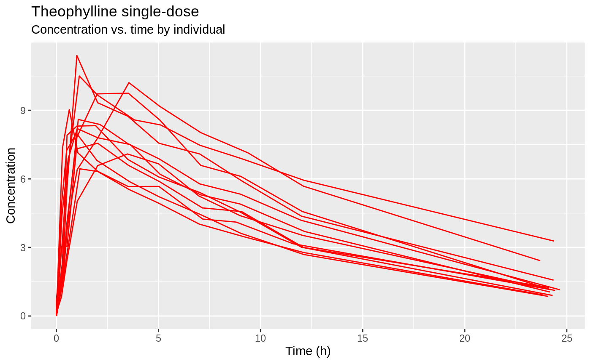
We can try fitting a simple one-compartment PK model to this small dataset. We write the model as follows:
one.cmt <- function() {
ini({
## You may label each parameter with a comment
tka <- 0.45 # Log Ka
tcl <- 1 # Log Cl
## This works with interactive models
## You may also label the preceding line with label("label text")
tv <- 3.45; label("log V")
## the label("Label name") works with all models
eta.ka ~ 0.6
eta.cl ~ 0.3
eta.v ~ 0.1
add.sd <- 0.7
})
model({
ka <- exp(tka + eta.ka)
cl <- exp(tcl + eta.cl)
v <- exp(tv + eta.v)
linCmt() ~ add(add.sd)
})
}We can now run the model…
fit <- nlmixr(one.cmt, theo_sd, est="nlme")
#>
#> **Iteration 1
#> LME step: Loglik: -183.2149, nlminb iterations: 1
#> reStruct parameters:
#> ID1 ID2 ID3
#> 0.2198819 0.9924203 1.6504986
#> Beginning PNLS step: .. completed fit_nlme() step.
#> PNLS step: RSS = 64.12713
#> fixed effects: 0.445205 1.01864 3.449067
#> iterations: 7
#> Convergence crit. (must all become <= tolerance = 1e-05):
#> fixed reStruct
#> 0.01829917 0.87183808
#>
#> **Iteration 2
#> LME step: Loglik: -179.7485, nlminb iterations: 7
#> reStruct parameters:
#> ID1 ID2 ID3
#> 0.1098767 0.9674593 1.6403262
#> Beginning PNLS step: .. completed fit_nlme() step.
#> PNLS step: RSS = 64.05998
#> fixed effects: 0.446521 1.01853 3.449222
#> iterations: 7
#> Convergence crit. (must all become <= tolerance = 1e-05):
#> fixed reStruct
#> 0.002947402 0.043196900
#>
#> **Iteration 3
#> LME step: Loglik: -179.7363, nlminb iterations: 5
#> reStruct parameters:
#> ID1 ID2 ID3
#> 0.1132784 0.9676319 1.6413587
#> Beginning PNLS step: .. completed fit_nlme() step.
#> PNLS step: RSS = 64.06906
#> fixed effects: 0.446521 1.01853 3.449222
#> iterations: 1
#> Convergence crit. (must all become <= tolerance = 1e-05):
#> fixed reStruct
#> 0.000000000 0.005871174
#>
#> **Iteration 4
#> LME step: Loglik: -179.7363, nlminb iterations: 1
#> reStruct parameters:
#> ID1 ID2 ID3
#> 0.1132693 0.9676245 1.6413627
#> Beginning PNLS step: .. completed fit_nlme() step.
#> PNLS step: RSS = 64.06906
#> fixed effects: 0.446521 1.01853 3.449222
#> iterations: 1
#> Convergence crit. (must all become <= tolerance = 1e-05):
#> fixed reStruct
#> 0.00000e+00 2.14754e-10
#> [====|====|====|====|====|====|====|====|====|====] 0:00:00
#>
#> [====|====|====|====|====|====|====|====|====|====] 0:00:00
print(fit)
#> ── nlmixr nlme by maximum likelihood (Solved; μ-ref & covs) nlme OBF fit ──
#> OBJF AIC BIC Log-likelihood Condition Number
#> nlme 116.8727 373.4725 393.6521 -179.7363 17.08747
#>
#> ── Time (sec; $time): ─────────────────────────────────────────────────────
#> nlme setup table other
#> elapsed 2.891 0.894752 0.092 0.631248
#>
#> ── Population Parameters ($parFixed or $parFixedDf): ──────────────────────
#> Parameter Est. SE %RSE Back-transformed(95%CI) BSV(CV%)
#> tka Log Ka 0.447 0.192 43 1.56 (1.07, 2.28) 68.7
#> tcl Log Cl 1.02 0.0847 8.31 2.77 (2.35, 3.27) 26.9
#> tv log V 3.45 0.0464 1.35 31.5 (28.7, 34.5) 13.6
#> add.sd 0.697 0.697
#> Shrink(SD)%
#> tka 0.241%
#> tcl 3.78%
#> tv 10.0%
#> add.sd
#>
#> Covariance Type ($covMethod): nlme
#> No correlations in between subject variability (BSV) matrix
#> Full BSV covariance ($omega) or correlation ($omegaR; diagonals=SDs)
#> Distribution stats (mean/skewness/kurtosis/p-value) available in $shrink
#>
#> ── Fit Data (object is a modified tibble): ────────────────────────────────
#> # A tibble: 132 x 19
#> ID TIME DV EVID PRED RES IPRED IRES IWRES eta.ka eta.cl
#> <fct> <dbl> <dbl> <int> <dbl> <dbl> <dbl> <dbl> <dbl> <dbl> <dbl>
#> 1 1 0 0.74 0 0 0.74 0 0.74 1.06 0.101 -0.479
#> 2 1 0.25 2.84 0 3.25 -0.410 3.84 -1.00 -1.44 0.101 -0.479
#> 3 1 0.570 6.57 0 5.83 0.744 6.78 -0.212 -0.305 0.101 -0.479
#> # … with 129 more rows, and 8 more variables: eta.v <dbl>,
#> # nlmixr_lincmt_ka <dbl>, nlmixr_lincmt_cl <dbl>, nlmixr_lincmt_v <dbl>,
#> # ka <dbl>, cl <dbl>, v <dbl>, nlmixr_lincmt_pred <dbl>We can alternatively express the same model by ordinary differential equations (ODEs):
one.compartment <- function() {
ini({
tka <- 0.45 # Log Ka
tcl <- 1 # Log Cl
tv <- 3.45 # Log V
eta.ka ~ 0.6
eta.cl ~ 0.3
eta.v ~ 0.1
add.sd <- 0.7
})
model({
ka <- exp(tka + eta.ka)
cl <- exp(tcl + eta.cl)
v <- exp(tv + eta.v)
d/dt(depot) = -ka * depot
d/dt(center) = ka * depot - cl / v * center
cp = center / v
cp ~ add(add.sd)
})
}We can try the Stochastic Approximation EM (SAEM) method to this model:
fit2 <- nlmixr(one.compartment, theo_sd, est="saem")
#> 1: 0.2288 0.9677 3.4737 0.5700 0.2850 0.0950 4.5245
#> 2: 0.3623 0.9821 3.5318 0.5415 0.2707 0.0902 1.8046
#> 3: 0.4864 0.9181 3.4872 0.5144 0.2572 0.0857 0.9422
#> 4: 0.4480 0.9416 3.4843 0.4887 0.2444 0.0815 0.6940
#> 5: 0.4844 0.9591 3.4754 0.4643 0.2321 0.0774 0.6019
#> 6: 0.4986 0.9687 3.4752 0.4411 0.2205 0.0735 0.5056
#> 7: 0.4577 0.9953 3.4634 0.4251 0.2095 0.0698 0.5076
#> 8: 0.4473 0.9911 3.4666 0.4039 0.1990 0.0663 0.5155
#> 9: 0.4188 0.9755 3.4615 0.3837 0.1891 0.0630 0.5210
#> 10: 0.4349 0.9798 3.4521 0.4305 0.1796 0.0599 0.4901
#> 11: 0.4537 0.9976 3.4548 0.4089 0.1706 0.0569 0.4911
#> 12: 0.4421 1.0104 3.4458 0.3885 0.1621 0.0540 0.4628
#> 13: 0.3941 1.0454 3.4243 0.3691 0.1540 0.0513 0.4783
#> 14: 0.4189 1.0204 3.4380 0.4545 0.1463 0.0488 0.5002
#> 15: 0.4506 1.0202 3.4468 0.4318 0.1390 0.0463 0.4889
#> 16: 0.4552 1.0112 3.4524 0.4209 0.1320 0.0440 0.5038
#> 17: 0.4542 1.0115 3.4558 0.4164 0.1254 0.0418 0.4658
#> 18: 0.4820 0.9828 3.4521 0.4451 0.1192 0.0397 0.5021
#> 19: 0.4339 0.9924 3.4505 0.4228 0.1132 0.0377 0.4914
#> 20: 0.4527 1.0041 3.4472 0.4037 0.1075 0.0358 0.4928
#> 21: 0.4404 1.0079 3.4558 0.3885 0.1022 0.0341 0.4739
#> 22: 0.4625 1.0138 3.4599 0.4469 0.0971 0.0324 0.4520
#> 23: 0.5104 1.0181 3.4648 0.4535 0.0922 0.0307 0.4667
#> 24: 0.5050 1.0228 3.4659 0.4308 0.0876 0.0292 0.4543
#> 25: 0.4633 0.9967 3.4608 0.4093 0.0861 0.0277 0.4789
#> 26: 0.4183 1.0293 3.4345 0.4183 0.0818 0.0264 0.4644
#> 27: 0.4126 1.0361 3.4357 0.3973 0.0777 0.0250 0.4941
#> 28: 0.4592 1.0181 3.4429 0.3775 0.0738 0.0238 0.4538
#> 29: 0.4413 1.0248 3.4369 0.3586 0.0701 0.0226 0.4801
#> 30: 0.4506 1.0195 3.4440 0.3689 0.0672 0.0215 0.4824
#> 31: 0.4049 1.0069 3.4520 0.3505 0.0768 0.0204 0.4778
#> 32: 0.4292 0.9864 3.4607 0.3939 0.0729 0.0205 0.4702
#> 33: 0.4417 1.0151 3.4477 0.4332 0.0693 0.0195 0.4917
#> 34: 0.4597 1.0252 3.4485 0.4238 0.0658 0.0185 0.4909
#> 35: 0.4485 0.9940 3.4511 0.4026 0.0637 0.0176 0.4766
#> 36: 0.4405 1.0103 3.4488 0.3825 0.0658 0.0167 0.4873
#> 37: 0.4408 1.0163 3.4572 0.3731 0.0707 0.0195 0.4872
#> 38: 0.5014 1.0088 3.4476 0.4544 0.0752 0.0185 0.4844
#> 39: 0.5031 0.9852 3.4647 0.4819 0.0715 0.0245 0.4632
#> 40: 0.4910 0.9905 3.4762 0.4578 0.0679 0.0272 0.4737
#> 41: 0.4276 0.9901 3.4569 0.4349 0.0645 0.0259 0.4968
#> 42: 0.4696 1.0088 3.4529 0.4236 0.0656 0.0246 0.4457
#> 43: 0.4296 1.0293 3.4341 0.4025 0.0641 0.0233 0.4549
#> 44: 0.4268 1.0334 3.4423 0.3823 0.0609 0.0237 0.4758
#> 45: 0.4435 1.0397 3.4447 0.4115 0.0585 0.0265 0.4409
#> 46: 0.4406 1.0217 3.4500 0.3910 0.0765 0.0252 0.4533
#> 47: 0.4454 1.0224 3.4450 0.3841 0.0727 0.0239 0.4644
#> 48: 0.4597 1.0215 3.4499 0.4516 0.0691 0.0238 0.4764
#> 49: 0.4512 1.0173 3.4484 0.4290 0.0668 0.0239 0.4950
#> 50: 0.4538 0.9948 3.4407 0.4076 0.0767 0.0227 0.5089
#> 51: 0.4708 1.0340 3.4357 0.4159 0.0729 0.0216 0.4933
#> 52: 0.5150 1.0202 3.4583 0.4959 0.0692 0.0205 0.4824
#> 53: 0.5019 1.0156 3.4502 0.4711 0.0658 0.0195 0.5123
#> 54: 0.4544 1.0083 3.4541 0.4476 0.0654 0.0188 0.5106
#> 55: 0.4427 1.0017 3.4534 0.4252 0.0705 0.0191 0.4871
#> 56: 0.4411 0.9917 3.4486 0.4039 0.0670 0.0214 0.4881
#> 57: 0.4808 1.0063 3.4621 0.3957 0.0668 0.0203 0.4932
#> 58: 0.5100 1.0050 3.4567 0.4291 0.0677 0.0193 0.4939
#> 59: 0.5064 0.9712 3.4642 0.4676 0.0888 0.0183 0.5044
#> 60: 0.4913 0.9699 3.4635 0.4897 0.0844 0.0184 0.5281
#> 61: 0.5047 0.9892 3.4614 0.5644 0.0801 0.0187 0.5103
#> 62: 0.4536 1.0146 3.4580 0.5362 0.0826 0.0193 0.5128
#> 63: 0.4776 1.0017 3.4530 0.5094 0.0915 0.0184 0.4863
#> 64: 0.4550 1.0007 3.4565 0.4839 0.0903 0.0176 0.4998
#> 65: 0.4857 1.0002 3.4422 0.4597 0.0874 0.0193 0.4952
#> 66: 0.4478 1.0116 3.4506 0.4368 0.0878 0.0189 0.4872
#> 67: 0.4560 0.9978 3.4400 0.4149 0.0834 0.0198 0.4768
#> 68: 0.4015 1.0105 3.4500 0.3942 0.0792 0.0188 0.5248
#> 69: 0.4199 1.0082 3.4475 0.4043 0.0752 0.0200 0.5082
#> 70: 0.4253 1.0065 3.4493 0.4755 0.0731 0.0205 0.5055
#> 71: 0.4117 1.0205 3.4353 0.4518 0.0709 0.0194 0.5004
#> 72: 0.4360 0.9896 3.4507 0.4292 0.0794 0.0185 0.4803
#> 73: 0.4627 1.0107 3.4625 0.4077 0.0755 0.0175 0.5032
#> 74: 0.4423 0.9902 3.4615 0.3951 0.0717 0.0167 0.5050
#> 75: 0.4804 0.9934 3.4805 0.3992 0.0838 0.0198 0.4787
#> 76: 0.5158 1.0021 3.4882 0.4126 0.0796 0.0189 0.5092
#> 77: 0.5218 0.9735 3.4803 0.4015 0.0756 0.0212 0.4962
#> 78: 0.4955 0.9901 3.4782 0.4149 0.0723 0.0212 0.4968
#> 79: 0.4812 1.0022 3.4688 0.4388 0.0687 0.0226 0.5138
#> 80: 0.4961 0.9871 3.4663 0.5095 0.0663 0.0231 0.5008
#> 81: 0.5070 1.0060 3.4671 0.4841 0.0629 0.0220 0.4849
#> 82: 0.4839 0.9860 3.4730 0.4599 0.0598 0.0277 0.4823
#> 83: 0.4757 1.0172 3.4654 0.4473 0.0568 0.0263 0.4652
#> 84: 0.4435 0.9975 3.4540 0.4364 0.0540 0.0261 0.4610
#> 85: 0.4664 1.0161 3.4677 0.4214 0.0540 0.0248 0.4924
#> 86: 0.4662 1.0089 3.4598 0.4003 0.0599 0.0275 0.4604
#> 87: 0.4415 1.0119 3.4497 0.3899 0.0569 0.0262 0.4832
#> 88: 0.3796 1.0086 3.4436 0.4004 0.0589 0.0249 0.4865
#> 89: 0.4269 1.0175 3.4436 0.3804 0.0593 0.0236 0.5350
#> 90: 0.4326 1.0242 3.4437 0.4088 0.0563 0.0224 0.5157
#> 91: 0.4446 1.0109 3.4282 0.4562 0.0597 0.0216 0.4853
#> 92: 0.4320 1.0268 3.4386 0.5057 0.0691 0.0236 0.4781
#> 93: 0.3564 1.0149 3.4338 0.4804 0.0698 0.0224 0.5011
#> 94: 0.3878 1.0151 3.4224 0.4563 0.0727 0.0213 0.5119
#> 95: 0.4563 1.0220 3.4455 0.5434 0.0709 0.0202 0.5028
#> 96: 0.4575 1.0088 3.4446 0.5162 0.0673 0.0206 0.4731
#> 97: 0.4498 1.0277 3.4474 0.4904 0.0640 0.0197 0.4830
#> 98: 0.4713 1.0243 3.4547 0.4659 0.0617 0.0187 0.4752
#> 99: 0.4413 1.0028 3.4478 0.4426 0.0587 0.0194 0.4663
#> 100: 0.4279 1.0081 3.4471 0.4205 0.0648 0.0213 0.4570
#> 101: 0.4195 1.0062 3.4350 0.4386 0.0788 0.0202 0.4638
#> 102: 0.4093 1.0121 3.4290 0.4565 0.0749 0.0192 0.4679
#> 103: 0.4730 1.0048 3.4494 0.4635 0.0711 0.0201 0.4593
#> 104: 0.4535 1.0068 3.4564 0.4917 0.0693 0.0193 0.4936
#> 105: 0.4404 1.0082 3.4391 0.5036 0.0828 0.0183 0.5014
#> 106: 0.4470 1.0029 3.4488 0.4785 0.0839 0.0174 0.4972
#> 107: 0.4493 1.0090 3.4480 0.4990 0.0820 0.0166 0.4727
#> 108: 0.4533 1.0076 3.4550 0.4741 0.0779 0.0178 0.4784
#> 109: 0.4513 1.0176 3.4609 0.4504 0.0740 0.0176 0.4651
#> 110: 0.4804 0.9923 3.4544 0.4616 0.0703 0.0187 0.4615
#> 111: 0.4768 0.9979 3.4601 0.4385 0.0801 0.0178 0.4392
#> 112: 0.4809 0.9864 3.4540 0.4495 0.0761 0.0187 0.4452
#> 113: 0.4422 1.0386 3.4474 0.4592 0.0723 0.0182 0.4465
#> 114: 0.4311 1.0411 3.4368 0.4363 0.0771 0.0190 0.4466
#> 115: 0.4261 1.0006 3.4460 0.4145 0.0733 0.0197 0.4811
#> 116: 0.4618 1.0050 3.4459 0.4178 0.0696 0.0190 0.4804
#> 117: 0.4243 1.0276 3.4502 0.3969 0.0758 0.0181 0.4830
#> 118: 0.4661 1.0209 3.4537 0.3771 0.0798 0.0177 0.4902
#> 119: 0.4684 1.0132 3.4548 0.4747 0.0838 0.0220 0.5065
#> 120: 0.4260 1.0016 3.4485 0.4611 0.0796 0.0209 0.4749
#> 121: 0.4415 1.0288 3.4409 0.4380 0.0756 0.0199 0.4814
#> 122: 0.4389 1.0077 3.4469 0.4161 0.0719 0.0189 0.4544
#> 123: 0.4391 1.0456 3.4443 0.4249 0.0683 0.0203 0.4614
#> 124: 0.4663 1.0506 3.4504 0.4291 0.0669 0.0197 0.4463
#> 125: 0.4714 1.0387 3.4485 0.4077 0.0829 0.0188 0.4568
#> 126: 0.4426 1.0411 3.4412 0.4396 0.0891 0.0189 0.4532
#> 127: 0.4472 1.0047 3.4338 0.4235 0.0859 0.0206 0.4881
#> 128: 0.4413 1.0274 3.4457 0.4504 0.0817 0.0258 0.5163
#> 129: 0.4669 1.0151 3.4652 0.4828 0.0776 0.0245 0.4812
#> 130: 0.5358 1.0291 3.4502 0.5114 0.0737 0.0233 0.4844
#> 131: 0.4486 1.0021 3.4407 0.4858 0.0757 0.0223 0.4845
#> 132: 0.4105 1.0228 3.4263 0.4615 0.0845 0.0212 0.5082
#> 133: 0.4199 1.0085 3.4401 0.4384 0.0803 0.0201 0.5018
#> 134: 0.4689 1.0094 3.4565 0.4267 0.0763 0.0216 0.4707
#> 135: 0.4788 0.9996 3.4608 0.4429 0.0725 0.0212 0.4738
#> 136: 0.4736 0.9941 3.4609 0.4257 0.0721 0.0202 0.4765
#> 137: 0.5135 1.0050 3.4650 0.4808 0.0685 0.0192 0.4929
#> 138: 0.5037 1.0134 3.4640 0.4617 0.0673 0.0182 0.4583
#> 139: 0.4580 1.0140 3.4590 0.4430 0.0695 0.0173 0.4582
#> 140: 0.4554 1.0406 3.4555 0.4401 0.0692 0.0165 0.4809
#> 141: 0.4652 1.0116 3.4584 0.4410 0.0732 0.0167 0.4540
#> 142: 0.4681 0.9963 3.4702 0.4189 0.0738 0.0164 0.4898
#> 143: 0.4680 1.0157 3.4646 0.4407 0.0833 0.0195 0.4852
#> 144: 0.5092 1.0186 3.4736 0.4186 0.0791 0.0185 0.4794
#> 145: 0.4775 1.0224 3.4537 0.4057 0.0751 0.0194 0.4598
#> 146: 0.4477 1.0231 3.4559 0.4141 0.0755 0.0184 0.4565
#> 147: 0.4491 1.0038 3.4440 0.3934 0.0717 0.0175 0.4539
#> 148: 0.4138 1.0081 3.4505 0.3766 0.0681 0.0167 0.4592
#> 149: 0.4358 1.0014 3.4566 0.3593 0.0740 0.0181 0.4525
#> 150: 0.4642 0.9971 3.4466 0.3686 0.0714 0.0172 0.4835
#> 151: 0.3957 1.0290 3.4428 0.3502 0.0678 0.0166 0.4597
#> 152: 0.4385 1.0303 3.4418 0.4135 0.0751 0.0182 0.4428
#> 153: 0.4311 1.0241 3.4551 0.4449 0.0695 0.0211 0.4585
#> 154: 0.4526 1.0361 3.4580 0.4451 0.0804 0.0216 0.4675
#> 155: 0.4456 1.0099 3.4491 0.5220 0.0655 0.0260 0.4651
#> 156: 0.4692 1.0232 3.4570 0.4744 0.0750 0.0272 0.4873
#> 157: 0.4455 1.0076 3.4554 0.4163 0.0657 0.0275 0.4962
#> 158: 0.4667 1.0137 3.4557 0.4095 0.0575 0.0256 0.4879
#> 159: 0.4116 1.0284 3.4529 0.3624 0.0561 0.0203 0.4950
#> 160: 0.4460 0.9918 3.4546 0.4222 0.0633 0.0187 0.4917
#> 161: 0.4045 1.0219 3.4411 0.3363 0.0583 0.0210 0.4802
#> 162: 0.4111 1.0408 3.4360 0.4027 0.0551 0.0216 0.4717
#> 163: 0.4583 1.0217 3.4334 0.4395 0.0513 0.0194 0.4768
#> 164: 0.4343 1.0235 3.4361 0.4231 0.0466 0.0197 0.4779
#> 165: 0.4498 1.0205 3.4460 0.4112 0.0505 0.0209 0.4710
#> 166: 0.4655 1.0353 3.4502 0.4515 0.0434 0.0244 0.4772
#> 167: 0.4715 1.0477 3.4591 0.3925 0.0515 0.0259 0.4848
#> 168: 0.4719 1.0397 3.4566 0.3975 0.0533 0.0251 0.4815
#> 169: 0.4835 1.0503 3.4514 0.3927 0.0596 0.0228 0.4881
#> 170: 0.4904 1.0318 3.4596 0.3819 0.0535 0.0245 0.4970
#> 171: 0.4790 1.0233 3.4594 0.3958 0.0581 0.0266 0.4693
#> 172: 0.4367 1.0286 3.4543 0.3950 0.0483 0.0240 0.4750
#> 173: 0.4349 1.0299 3.4430 0.3543 0.0537 0.0328 0.4562
#> 174: 0.4384 1.0341 3.4546 0.3507 0.0429 0.0312 0.4850
#> 175: 0.4110 1.0363 3.4397 0.3697 0.0562 0.0320 0.4905
#> 176: 0.4096 1.0352 3.4566 0.3879 0.0568 0.0247 0.4872
#> 177: 0.4624 1.0183 3.4540 0.4842 0.0609 0.0292 0.4606
#> 178: 0.4544 1.0014 3.4640 0.4038 0.0670 0.0248 0.4518
#> 179: 0.4937 1.0053 3.4593 0.4311 0.0793 0.0215 0.4725
#> 180: 0.4610 1.0052 3.4684 0.3130 0.0739 0.0202 0.4899
#> 181: 0.4457 1.0111 3.4327 0.3551 0.0622 0.0206 0.4881
#> 182: 0.4208 1.0181 3.4365 0.3383 0.0822 0.0203 0.4912
#> 183: 0.4391 1.0126 3.4420 0.3760 0.0710 0.0206 0.4885
#> 184: 0.4328 1.0152 3.4418 0.4418 0.0662 0.0201 0.4694
#> 185: 0.4007 1.0374 3.4336 0.4132 0.0730 0.0258 0.4663
#> 186: 0.3875 1.0509 3.4277 0.4124 0.0737 0.0292 0.4863
#> 187: 0.4129 1.0251 3.4382 0.3934 0.0605 0.0311 0.4913
#> 188: 0.4050 1.0465 3.4394 0.4021 0.0719 0.0252 0.4824
#> 189: 0.4270 1.0324 3.4475 0.4149 0.0642 0.0241 0.4776
#> 190: 0.4604 1.0185 3.4590 0.3588 0.0572 0.0247 0.4623
#> 191: 0.4564 1.0253 3.4565 0.3920 0.0646 0.0253 0.4507
#> 192: 0.4462 1.0148 3.4547 0.3613 0.0745 0.0207 0.4635
#> 193: 0.4690 1.0323 3.4516 0.3870 0.0699 0.0217 0.4650
#> 194: 0.4237 1.0227 3.4307 0.4119 0.0629 0.0157 0.4844
#> 195: 0.4132 1.0418 3.4191 0.3738 0.0626 0.0156 0.4908
#> 196: 0.4215 1.0304 3.4331 0.4396 0.0816 0.0158 0.4810
#> 197: 0.3767 1.0441 3.4434 0.3869 0.0706 0.0170 0.5149
#> 198: 0.4390 1.0243 3.4298 0.4769 0.0739 0.0175 0.4693
#> 199: 0.4173 1.0072 3.4381 0.4556 0.0734 0.0178 0.4568
#> 200: 0.4224 1.0074 3.4394 0.4044 0.0729 0.0193 0.4768
#> 201: 0.4245 1.0067 3.4442 0.3952 0.0739 0.0198 0.4715
#> 202: 0.4220 1.0110 3.4439 0.4072 0.0720 0.0211 0.4728
#> 203: 0.4319 1.0094 3.4422 0.4291 0.0726 0.0217 0.4677
#> 204: 0.4344 1.0041 3.4441 0.4368 0.0729 0.0208 0.4693
#> 205: 0.4370 1.0086 3.4435 0.4327 0.0743 0.0211 0.4724
#> 206: 0.4413 1.0141 3.4445 0.4392 0.0737 0.0208 0.4756
#> 207: 0.4372 1.0164 3.4436 0.4333 0.0716 0.0207 0.4763
#> 208: 0.4371 1.0162 3.4439 0.4237 0.0692 0.0210 0.4770
#> 209: 0.4388 1.0155 3.4436 0.4289 0.0681 0.0211 0.4751
#> 210: 0.4398 1.0138 3.4447 0.4288 0.0674 0.0211 0.4734
#> 211: 0.4438 1.0140 3.4459 0.4319 0.0679 0.0210 0.4713
#> 212: 0.4469 1.0123 3.4466 0.4305 0.0677 0.0208 0.4713
#> 213: 0.4485 1.0098 3.4471 0.4290 0.0681 0.0205 0.4730
#> 214: 0.4530 1.0094 3.4477 0.4334 0.0690 0.0203 0.4742
#> 215: 0.4545 1.0090 3.4489 0.4332 0.0699 0.0202 0.4744
#> 216: 0.4583 1.0073 3.4497 0.4417 0.0700 0.0201 0.4762
#> 217: 0.4604 1.0077 3.4503 0.4452 0.0699 0.0201 0.4759
#> 218: 0.4626 1.0079 3.4503 0.4496 0.0696 0.0201 0.4763
#> 219: 0.4624 1.0075 3.4498 0.4515 0.0693 0.0200 0.4768
#> 220: 0.4602 1.0079 3.4497 0.4489 0.0691 0.0200 0.4768
#> 221: 0.4581 1.0083 3.4493 0.4453 0.0688 0.0201 0.4768
#> 222: 0.4584 1.0087 3.4494 0.4475 0.0686 0.0202 0.4772
#> 223: 0.4601 1.0084 3.4499 0.4486 0.0683 0.0204 0.4766
#> 224: 0.4629 1.0089 3.4505 0.4514 0.0681 0.0206 0.4759
#> 225: 0.4630 1.0076 3.4510 0.4510 0.0679 0.0206 0.4761
#> 226: 0.4642 1.0062 3.4513 0.4513 0.0680 0.0207 0.4762
#> 227: 0.4646 1.0059 3.4516 0.4495 0.0682 0.0207 0.4758
#> 228: 0.4647 1.0068 3.4514 0.4491 0.0680 0.0207 0.4761
#> 229: 0.4643 1.0066 3.4512 0.4489 0.0678 0.0208 0.4759
#> 230: 0.4635 1.0067 3.4508 0.4473 0.0678 0.0209 0.4760
#> 231: 0.4631 1.0070 3.4511 0.4443 0.0675 0.0210 0.4762
#> 232: 0.4629 1.0071 3.4513 0.4432 0.0674 0.0209 0.4757
#> 233: 0.4623 1.0063 3.4515 0.4448 0.0673 0.0209 0.4762
#> 234: 0.4615 1.0065 3.4515 0.4432 0.0672 0.0209 0.4765
#> 235: 0.4608 1.0064 3.4511 0.4419 0.0670 0.0210 0.4762
#> 236: 0.4606 1.0071 3.4509 0.4405 0.0669 0.0210 0.4761
#> 237: 0.4607 1.0067 3.4511 0.4405 0.0669 0.0211 0.4767
#> 238: 0.4611 1.0073 3.4510 0.4401 0.0671 0.0211 0.4779
#> 239: 0.4608 1.0078 3.4510 0.4394 0.0672 0.0210 0.4780
#> 240: 0.4609 1.0079 3.4512 0.4390 0.0674 0.0210 0.4776
#> 241: 0.4620 1.0072 3.4514 0.4393 0.0676 0.0210 0.4776
#> 242: 0.4624 1.0069 3.4514 0.4384 0.0680 0.0210 0.4779
#> 243: 0.4624 1.0072 3.4514 0.4370 0.0684 0.0210 0.4780
#> 244: 0.4619 1.0073 3.4516 0.4345 0.0687 0.0209 0.4786
#> 245: 0.4618 1.0068 3.4519 0.4321 0.0688 0.0208 0.4791
#> 246: 0.4620 1.0065 3.4520 0.4303 0.0690 0.0208 0.4797
#> 247: 0.4624 1.0065 3.4523 0.4300 0.0692 0.0209 0.4800
#> 248: 0.4626 1.0065 3.4526 0.4290 0.0691 0.0209 0.4797
#> 249: 0.4622 1.0067 3.4526 0.4280 0.0691 0.0209 0.4795
#> 250: 0.4630 1.0072 3.4529 0.4283 0.0690 0.0209 0.4794
#> 251: 0.4640 1.0074 3.4533 0.4293 0.0691 0.0209 0.4790
#> 252: 0.4646 1.0076 3.4538 0.4306 0.0690 0.0209 0.4791
#> 253: 0.4647 1.0078 3.4540 0.4311 0.0688 0.0209 0.4795
#> 254: 0.4644 1.0081 3.4542 0.4316 0.0689 0.0208 0.4795
#> 255: 0.4641 1.0085 3.4543 0.4304 0.0690 0.0209 0.4797
#> 256: 0.4640 1.0086 3.4542 0.4303 0.0689 0.0209 0.4792
#> 257: 0.4636 1.0082 3.4541 0.4300 0.0687 0.0208 0.4790
#> 258: 0.4634 1.0079 3.4539 0.4316 0.0688 0.0209 0.4786
#> 259: 0.4631 1.0077 3.4538 0.4314 0.0689 0.0209 0.4781
#> 260: 0.4628 1.0080 3.4539 0.4310 0.0688 0.0209 0.4780
#> 261: 0.4631 1.0080 3.4541 0.4300 0.0688 0.0209 0.4779
#> 262: 0.4628 1.0082 3.4541 0.4287 0.0690 0.0209 0.4778
#> 263: 0.4626 1.0083 3.4542 0.4280 0.0689 0.0209 0.4778
#> 264: 0.4621 1.0087 3.4541 0.4281 0.0689 0.0208 0.4781
#> 265: 0.4621 1.0089 3.4540 0.4285 0.0692 0.0208 0.4782
#> 266: 0.4620 1.0092 3.4539 0.4300 0.0691 0.0207 0.4782
#> 267: 0.4617 1.0096 3.4538 0.4320 0.0692 0.0207 0.4783
#> 268: 0.4620 1.0098 3.4536 0.4329 0.0691 0.0207 0.4786
#> 269: 0.4622 1.0099 3.4535 0.4326 0.0691 0.0206 0.4788
#> 270: 0.4622 1.0103 3.4532 0.4333 0.0692 0.0206 0.4785
#> 271: 0.4621 1.0107 3.4530 0.4330 0.0691 0.0205 0.4787
#> 272: 0.4623 1.0107 3.4528 0.4326 0.0693 0.0205 0.4790
#> 273: 0.4619 1.0111 3.4528 0.4316 0.0695 0.0205 0.4791
#> 274: 0.4618 1.0114 3.4529 0.4301 0.0697 0.0204 0.4792
#> 275: 0.4618 1.0115 3.4529 0.4293 0.0699 0.0204 0.4789
#> 276: 0.4615 1.0116 3.4529 0.4290 0.0700 0.0203 0.4788
#> 277: 0.4606 1.0117 3.4529 0.4281 0.0699 0.0203 0.4789
#> 278: 0.4603 1.0116 3.4529 0.4280 0.0697 0.0203 0.4791
#> 279: 0.4602 1.0114 3.4530 0.4281 0.0695 0.0203 0.4793
#> 280: 0.4602 1.0114 3.4532 0.4279 0.0695 0.0203 0.4792
#> 281: 0.4604 1.0115 3.4534 0.4283 0.0694 0.0203 0.4792
#> 282: 0.4609 1.0118 3.4535 0.4296 0.0695 0.0202 0.4792
#> 283: 0.4610 1.0120 3.4536 0.4308 0.0694 0.0202 0.4799
#> 284: 0.4605 1.0121 3.4534 0.4321 0.0693 0.0202 0.4800
#> 285: 0.4600 1.0124 3.4531 0.4318 0.0692 0.0202 0.4799
#> 286: 0.4595 1.0128 3.4529 0.4320 0.0692 0.0201 0.4797
#> 287: 0.4589 1.0133 3.4525 0.4321 0.0693 0.0201 0.4796
#> 288: 0.4587 1.0134 3.4523 0.4316 0.0694 0.0201 0.4798
#> 289: 0.4579 1.0134 3.4521 0.4304 0.0695 0.0201 0.4799
#> 290: 0.4577 1.0135 3.4519 0.4304 0.0696 0.0201 0.4800
#> 291: 0.4577 1.0140 3.4519 0.4310 0.0697 0.0201 0.4799
#> 292: 0.4577 1.0141 3.4517 0.4316 0.0699 0.0201 0.4799
#> 293: 0.4575 1.0141 3.4516 0.4319 0.0699 0.0201 0.4802
#> 294: 0.4575 1.0141 3.4514 0.4323 0.0699 0.0202 0.4804
#> 295: 0.4574 1.0138 3.4514 0.4326 0.0699 0.0202 0.4803
#> 296: 0.4572 1.0139 3.4515 0.4318 0.0698 0.0202 0.4805
#> 297: 0.4571 1.0140 3.4514 0.4320 0.0698 0.0203 0.4807
#> 298: 0.4571 1.0140 3.4514 0.4314 0.0698 0.0203 0.4808
#> 299: 0.4573 1.0140 3.4514 0.4317 0.0699 0.0202 0.4809
#> 300: 0.4575 1.0140 3.4515 0.4322 0.0699 0.0202 0.4808
#> 301: 0.4577 1.0138 3.4514 0.4315 0.0699 0.0201 0.4808
#> 302: 0.4579 1.0139 3.4515 0.4309 0.0699 0.0201 0.4806
#> 303: 0.4582 1.0138 3.4516 0.4304 0.0699 0.0202 0.4804
#> 304: 0.4583 1.0140 3.4516 0.4309 0.0698 0.0202 0.4804
#> 305: 0.4584 1.0138 3.4515 0.4304 0.0698 0.0202 0.4805
#> 306: 0.4579 1.0139 3.4513 0.4301 0.0698 0.0202 0.4805
#> 307: 0.4575 1.0138 3.4512 0.4292 0.0698 0.0202 0.4807
#> 308: 0.4571 1.0137 3.4510 0.4291 0.0698 0.0202 0.4809
#> 309: 0.4566 1.0135 3.4509 0.4291 0.0698 0.0202 0.4812
#> 310: 0.4566 1.0135 3.4507 0.4294 0.0699 0.0202 0.4816
#> 311: 0.4567 1.0133 3.4507 0.4296 0.0699 0.0201 0.4816
#> 312: 0.4564 1.0133 3.4506 0.4300 0.0701 0.0201 0.4817
#> 313: 0.4561 1.0131 3.4504 0.4300 0.0701 0.0200 0.4820
#> 314: 0.4556 1.0129 3.4504 0.4296 0.0701 0.0200 0.4821
#> 315: 0.4555 1.0129 3.4504 0.4296 0.0701 0.0199 0.4821
#> 316: 0.4556 1.0130 3.4503 0.4297 0.0702 0.0199 0.4821
#> 317: 0.4556 1.0132 3.4503 0.4290 0.0702 0.0199 0.4821
#> 318: 0.4556 1.0134 3.4503 0.4286 0.0702 0.0199 0.4821
#> 319: 0.4554 1.0135 3.4503 0.4279 0.0702 0.0199 0.4823
#> 320: 0.4551 1.0134 3.4502 0.4278 0.0702 0.0198 0.4823
#> 321: 0.4546 1.0136 3.4500 0.4277 0.0701 0.0198 0.4823
#> 322: 0.4547 1.0136 3.4499 0.4287 0.0701 0.0198 0.4822
#> 323: 0.4546 1.0136 3.4498 0.4291 0.0701 0.0198 0.4820
#> 324: 0.4544 1.0138 3.4497 0.4298 0.0701 0.0198 0.4819
#> 325: 0.4544 1.0140 3.4496 0.4298 0.0701 0.0198 0.4818
#> 326: 0.4542 1.0139 3.4495 0.4298 0.0701 0.0198 0.4817
#> 327: 0.4545 1.0141 3.4495 0.4309 0.0701 0.0198 0.4815
#> 328: 0.4545 1.0141 3.4494 0.4315 0.0701 0.0198 0.4815
#> 329: 0.4547 1.0142 3.4495 0.4318 0.0701 0.0198 0.4814
#> 330: 0.4544 1.0142 3.4495 0.4317 0.0701 0.0198 0.4813
#> 331: 0.4544 1.0143 3.4495 0.4311 0.0701 0.0198 0.4813
#> 332: 0.4545 1.0145 3.4496 0.4310 0.0701 0.0198 0.4814
#> 333: 0.4546 1.0145 3.4495 0.4313 0.0702 0.0197 0.4815
#> 334: 0.4543 1.0145 3.4494 0.4314 0.0702 0.0197 0.4814
#> 335: 0.4543 1.0146 3.4492 0.4318 0.0703 0.0197 0.4813
#> 336: 0.4536 1.0149 3.4490 0.4318 0.0704 0.0197 0.4814
#> 337: 0.4533 1.0153 3.4488 0.4322 0.0706 0.0197 0.4812
#> 338: 0.4533 1.0155 3.4488 0.4323 0.0708 0.0197 0.4811
#> 339: 0.4532 1.0157 3.4488 0.4318 0.0708 0.0196 0.4811
#> 340: 0.4532 1.0155 3.4488 0.4318 0.0709 0.0196 0.4811
#> 341: 0.4535 1.0154 3.4489 0.4317 0.0709 0.0196 0.4811
#> 342: 0.4534 1.0153 3.4489 0.4312 0.0709 0.0196 0.4811
#> 343: 0.4532 1.0153 3.4489 0.4307 0.0710 0.0196 0.4810
#> 344: 0.4532 1.0153 3.4489 0.4306 0.0709 0.0196 0.4810
#> 345: 0.4533 1.0153 3.4490 0.4303 0.0708 0.0196 0.4810
#> 346: 0.4531 1.0154 3.4489 0.4300 0.0707 0.0196 0.4809
#> 347: 0.4529 1.0155 3.4488 0.4300 0.0707 0.0196 0.4809
#> 348: 0.4526 1.0156 3.4486 0.4300 0.0706 0.0196 0.4810
#> 349: 0.4523 1.0157 3.4485 0.4301 0.0706 0.0196 0.4810
#> 350: 0.4520 1.0157 3.4484 0.4301 0.0705 0.0196 0.4809
#> 351: 0.4519 1.0157 3.4483 0.4303 0.0704 0.0196 0.4809
#> 352: 0.4517 1.0158 3.4482 0.4303 0.0703 0.0196 0.4811
#> 353: 0.4519 1.0160 3.4482 0.4305 0.0703 0.0196 0.4811
#> 354: 0.4519 1.0160 3.4481 0.4304 0.0703 0.0196 0.4811
#> 355: 0.4521 1.0160 3.4481 0.4305 0.0704 0.0196 0.4810
#> 356: 0.4520 1.0158 3.4481 0.4298 0.0704 0.0196 0.4811
#> 357: 0.4519 1.0159 3.4481 0.4296 0.0704 0.0196 0.4811
#> 358: 0.4519 1.0160 3.4482 0.4291 0.0704 0.0195 0.4809
#> 359: 0.4517 1.0161 3.4482 0.4288 0.0704 0.0195 0.4808
#> 360: 0.4515 1.0160 3.4481 0.4289 0.0704 0.0195 0.4807
#> 361: 0.4512 1.0161 3.4481 0.4283 0.0703 0.0195 0.4806
#> 362: 0.4511 1.0161 3.4481 0.4281 0.0703 0.0195 0.4804
#> 363: 0.4511 1.0160 3.4481 0.4280 0.0702 0.0195 0.4802
#> 364: 0.4512 1.0160 3.4481 0.4282 0.0701 0.0195 0.4802
#> 365: 0.4512 1.0158 3.4482 0.4281 0.0701 0.0196 0.4802
#> 366: 0.4510 1.0158 3.4482 0.4274 0.0700 0.0196 0.4804
#> 367: 0.4510 1.0158 3.4482 0.4270 0.0700 0.0196 0.4804
#> 368: 0.4511 1.0158 3.4482 0.4270 0.0700 0.0196 0.4803
#> 369: 0.4513 1.0158 3.4482 0.4273 0.0700 0.0196 0.4802
#> 370: 0.4514 1.0157 3.4483 0.4271 0.0699 0.0196 0.4803
#> 371: 0.4513 1.0158 3.4482 0.4269 0.0700 0.0197 0.4802
#> 372: 0.4509 1.0161 3.4481 0.4266 0.0700 0.0197 0.4802
#> 373: 0.4505 1.0163 3.4479 0.4263 0.0700 0.0197 0.4801
#> 374: 0.4502 1.0164 3.4478 0.4260 0.0700 0.0196 0.4800
#> 375: 0.4499 1.0164 3.4477 0.4258 0.0700 0.0196 0.4799
#> 376: 0.4496 1.0166 3.4477 0.4254 0.0700 0.0196 0.4798
#> 377: 0.4494 1.0167 3.4477 0.4251 0.0700 0.0196 0.4796
#> 378: 0.4492 1.0167 3.4476 0.4250 0.0700 0.0196 0.4796
#> 379: 0.4490 1.0166 3.4475 0.4251 0.0700 0.0196 0.4796
#> 380: 0.4488 1.0166 3.4474 0.4250 0.0701 0.0196 0.4796
#> 381: 0.4486 1.0166 3.4474 0.4249 0.0701 0.0196 0.4796
#> 382: 0.4484 1.0167 3.4474 0.4245 0.0701 0.0195 0.4795
#> 383: 0.4484 1.0166 3.4474 0.4244 0.0700 0.0195 0.4794
#> 384: 0.4483 1.0165 3.4474 0.4240 0.0700 0.0196 0.4794
#> 385: 0.4484 1.0164 3.4474 0.4242 0.0699 0.0196 0.4793
#> 386: 0.4486 1.0165 3.4475 0.4243 0.0700 0.0196 0.4792
#> 387: 0.4488 1.0166 3.4476 0.4239 0.0699 0.0196 0.4792
#> 388: 0.4489 1.0166 3.4477 0.4240 0.0699 0.0196 0.4791
#> 389: 0.4488 1.0165 3.4477 0.4239 0.0699 0.0196 0.4791
#> 390: 0.4487 1.0166 3.4476 0.4238 0.0700 0.0196 0.4789
#> 391: 0.4489 1.0166 3.4476 0.4238 0.0700 0.0196 0.4789
#> 392: 0.4489 1.0166 3.4476 0.4239 0.0699 0.0196 0.4790
#> 393: 0.4489 1.0166 3.4476 0.4241 0.0699 0.0195 0.4790
#> 394: 0.4491 1.0167 3.4475 0.4241 0.0699 0.0195 0.4790
#> 395: 0.4492 1.0167 3.4475 0.4236 0.0699 0.0195 0.4791
#> 396: 0.4492 1.0168 3.4476 0.4237 0.0698 0.0195 0.4791
#> 397: 0.4494 1.0165 3.4477 0.4237 0.0698 0.0195 0.4790
#> 398: 0.4498 1.0164 3.4479 0.4237 0.0698 0.0195 0.4790
#> 399: 0.4502 1.0162 3.4481 0.4235 0.0699 0.0196 0.4789
#> 400: 0.4504 1.0161 3.4482 0.4234 0.0699 0.0196 0.4789
#> 401: 0.4505 1.0161 3.4482 0.4231 0.0699 0.0196 0.4791
#> 402: 0.4505 1.0161 3.4483 0.4227 0.0699 0.0196 0.4792
#> 403: 0.4508 1.0160 3.4483 0.4227 0.0699 0.0196 0.4792
#> 404: 0.4509 1.0160 3.4483 0.4227 0.0699 0.0196 0.4791
#> 405: 0.4509 1.0160 3.4483 0.4228 0.0699 0.0196 0.4791
#> 406: 0.4509 1.0160 3.4483 0.4228 0.0699 0.0196 0.4791
#> 407: 0.4509 1.0159 3.4484 0.4229 0.0699 0.0196 0.4790
#> 408: 0.4512 1.0160 3.4484 0.4230 0.0700 0.0196 0.4790
#> 409: 0.4511 1.0160 3.4484 0.4228 0.0700 0.0196 0.4790
#> 410: 0.4509 1.0160 3.4483 0.4226 0.0700 0.0196 0.4790
#> 411: 0.4508 1.0160 3.4482 0.4226 0.0700 0.0196 0.4791
#> 412: 0.4508 1.0161 3.4482 0.4220 0.0700 0.0196 0.4792
#> 413: 0.4505 1.0162 3.4482 0.4214 0.0699 0.0196 0.4793
#> 414: 0.4503 1.0163 3.4482 0.4217 0.0699 0.0196 0.4792
#> 415: 0.4504 1.0163 3.4481 0.4217 0.0699 0.0196 0.4791
#> 416: 0.4503 1.0164 3.4481 0.4216 0.0698 0.0196 0.4792
#> 417: 0.4503 1.0164 3.4481 0.4216 0.0698 0.0196 0.4791
#> 418: 0.4503 1.0164 3.4481 0.4215 0.0699 0.0196 0.4790
#> 419: 0.4504 1.0164 3.4481 0.4217 0.0699 0.0197 0.4789
#> 420: 0.4506 1.0165 3.4482 0.4216 0.0700 0.0196 0.4788
#> 421: 0.4505 1.0165 3.4483 0.4214 0.0700 0.0196 0.4788
#> 422: 0.4507 1.0163 3.4483 0.4214 0.0700 0.0196 0.4787
#> 423: 0.4509 1.0163 3.4484 0.4213 0.0701 0.0196 0.4787
#> 424: 0.4507 1.0162 3.4483 0.4214 0.0701 0.0196 0.4786
#> 425: 0.4507 1.0163 3.4482 0.4216 0.0701 0.0196 0.4785
#> 426: 0.4507 1.0164 3.4482 0.4217 0.0701 0.0196 0.4784
#> 427: 0.4506 1.0165 3.4482 0.4218 0.0701 0.0196 0.4784
#> 428: 0.4507 1.0165 3.4482 0.4215 0.0701 0.0196 0.4784
#> 429: 0.4508 1.0165 3.4483 0.4213 0.0700 0.0196 0.4785
#> 430: 0.4507 1.0165 3.4483 0.4210 0.0701 0.0196 0.4786
#> 431: 0.4505 1.0165 3.4483 0.4208 0.0701 0.0196 0.4785
#> 432: 0.4504 1.0166 3.4483 0.4207 0.0701 0.0196 0.4784
#> 433: 0.4503 1.0167 3.4483 0.4207 0.0702 0.0196 0.4784
#> 434: 0.4503 1.0166 3.4483 0.4206 0.0702 0.0196 0.4784
#> 435: 0.4502 1.0166 3.4483 0.4203 0.0702 0.0196 0.4783
#> 436: 0.4502 1.0166 3.4484 0.4201 0.0702 0.0196 0.4784
#> 437: 0.4503 1.0166 3.4484 0.4202 0.0703 0.0196 0.4784
#> 438: 0.4501 1.0167 3.4483 0.4200 0.0703 0.0195 0.4784
#> 439: 0.4501 1.0168 3.4483 0.4200 0.0703 0.0195 0.4784
#> 440: 0.4502 1.0168 3.4484 0.4198 0.0703 0.0195 0.4784
#> 441: 0.4504 1.0168 3.4484 0.4199 0.0703 0.0195 0.4783
#> 442: 0.4504 1.0169 3.4485 0.4200 0.0702 0.0195 0.4783
#> 443: 0.4506 1.0169 3.4485 0.4202 0.0702 0.0195 0.4782
#> 444: 0.4505 1.0170 3.4484 0.4201 0.0703 0.0195 0.4783
#> 445: 0.4505 1.0170 3.4483 0.4205 0.0703 0.0194 0.4783
#> 446: 0.4504 1.0171 3.4483 0.4207 0.0704 0.0194 0.4784
#> 447: 0.4506 1.0171 3.4483 0.4209 0.0704 0.0194 0.4784
#> 448: 0.4507 1.0171 3.4484 0.4207 0.0704 0.0194 0.4783
#> 449: 0.4509 1.0171 3.4485 0.4203 0.0704 0.0194 0.4783
#> 450: 0.4510 1.0171 3.4486 0.4201 0.0704 0.0194 0.4783
#> 451: 0.4512 1.0170 3.4487 0.4201 0.0703 0.0194 0.4783
#> 452: 0.4515 1.0170 3.4488 0.4200 0.0703 0.0194 0.4783
#> 453: 0.4515 1.0169 3.4488 0.4197 0.0703 0.0194 0.4782
#> 454: 0.4516 1.0170 3.4488 0.4194 0.0703 0.0194 0.4781
#> 455: 0.4517 1.0170 3.4489 0.4194 0.0702 0.0194 0.4780
#> 456: 0.4518 1.0169 3.4488 0.4195 0.0702 0.0194 0.4780
#> 457: 0.4518 1.0169 3.4489 0.4195 0.0702 0.0194 0.4780
#> 458: 0.4518 1.0169 3.4489 0.4195 0.0701 0.0194 0.4779
#> 459: 0.4515 1.0170 3.4488 0.4194 0.0701 0.0194 0.4779
#> 460: 0.4513 1.0171 3.4488 0.4192 0.0700 0.0194 0.4779
#> 461: 0.4511 1.0172 3.4488 0.4190 0.0700 0.0194 0.4780
#> 462: 0.4510 1.0173 3.4488 0.4187 0.0700 0.0194 0.4780
#> 463: 0.4510 1.0173 3.4488 0.4184 0.0700 0.0194 0.4781
#> 464: 0.4510 1.0174 3.4487 0.4182 0.0700 0.0194 0.4780
#> 465: 0.4510 1.0173 3.4487 0.4181 0.0700 0.0194 0.4780
#> 466: 0.4509 1.0173 3.4487 0.4177 0.0700 0.0194 0.4781
#> 467: 0.4507 1.0172 3.4488 0.4173 0.0700 0.0194 0.4781
#> 468: 0.4508 1.0172 3.4488 0.4172 0.0701 0.0194 0.4782
#> 469: 0.4508 1.0174 3.4488 0.4174 0.0701 0.0194 0.4783
#> 470: 0.4507 1.0174 3.4488 0.4175 0.0702 0.0193 0.4783
#> 471: 0.4507 1.0174 3.4487 0.4174 0.0702 0.0193 0.4784
#> 472: 0.4507 1.0174 3.4488 0.4173 0.0702 0.0193 0.4784
#> 473: 0.4506 1.0174 3.4488 0.4171 0.0702 0.0193 0.4784
#> 474: 0.4507 1.0174 3.4488 0.4170 0.0702 0.0193 0.4785
#> 475: 0.4507 1.0175 3.4488 0.4169 0.0702 0.0193 0.4785
#> 476: 0.4507 1.0175 3.4488 0.4171 0.0702 0.0193 0.4785
#> 477: 0.4506 1.0175 3.4488 0.4170 0.0702 0.0193 0.4784
#> 478: 0.4505 1.0175 3.4488 0.4169 0.0702 0.0193 0.4784
#> 479: 0.4507 1.0174 3.4489 0.4170 0.0703 0.0193 0.4786
#> 480: 0.4506 1.0174 3.4489 0.4167 0.0704 0.0193 0.4787
#> 481: 0.4506 1.0175 3.4489 0.4164 0.0704 0.0193 0.4788
#> 482: 0.4506 1.0175 3.4489 0.4164 0.0703 0.0193 0.4788
#> 483: 0.4506 1.0174 3.4489 0.4165 0.0703 0.0193 0.4788
#> 484: 0.4506 1.0173 3.4489 0.4166 0.0703 0.0193 0.4788
#> 485: 0.4507 1.0174 3.4489 0.4168 0.0703 0.0193 0.4788
#> 486: 0.4507 1.0174 3.4489 0.4166 0.0703 0.0193 0.4788
#> 487: 0.4509 1.0174 3.4490 0.4166 0.0703 0.0193 0.4787
#> 488: 0.4509 1.0173 3.4490 0.4165 0.0703 0.0193 0.4787
#> 489: 0.4511 1.0173 3.4490 0.4166 0.0703 0.0193 0.4787
#> 490: 0.4513 1.0173 3.4491 0.4167 0.0703 0.0193 0.4787
#> 491: 0.4513 1.0173 3.4491 0.4166 0.0703 0.0193 0.4787
#> 492: 0.4514 1.0173 3.4492 0.4164 0.0703 0.0193 0.4787
#> 493: 0.4513 1.0173 3.4492 0.4163 0.0703 0.0193 0.4787
#> 494: 0.4513 1.0173 3.4491 0.4161 0.0703 0.0193 0.4787
#> 495: 0.4513 1.0173 3.4491 0.4160 0.0703 0.0193 0.4786
#> 496: 0.4514 1.0173 3.4491 0.4160 0.0703 0.0193 0.4786
#> 497: 0.4513 1.0173 3.4491 0.4163 0.0702 0.0193 0.4786
#> 498: 0.4513 1.0173 3.4490 0.4163 0.0702 0.0193 0.4785
#> 499: 0.4513 1.0174 3.4490 0.4165 0.0702 0.0193 0.4784
#> 500: 0.4513 1.0173 3.4489 0.4164 0.0702 0.0193 0.4783
#> [====|====|====|====|====|====|====|====|====|====] 0:00:00
#>
#> [====|====|====|====|====|====|====|====|====|====] 0:00:00
#>
#> [====|====|====|====|====|====|====|====|====|====] 0:00:00
print(fit2)
#> ── nlmixr SAEM(ODE); OBJF not calculated fit ──────────────────────────────
#> Gaussian/Laplacian Likelihoods: AIC() or $objf etc.
#> FOCEi CWRES & Likelihoods: addCwres()
#>
#> ── Time (sec; $time): ─────────────────────────────────────────────────────
#> saem setup table covariance other
#> elapsed 21.822 0.735356 0.01 0.007 0.228644
#>
#> ── Population Parameters ($parFixed or $parFixedDf): ──────────────────────
#> Parameter Est. SE %RSE Back-transformed(95%CI) BSV(CV%)
#> tka Log Ka 0.451 0.196 43.5 1.57 (1.07, 2.31) 71.9
#> tcl Log Cl 1.02 0.0836 8.22 2.77 (2.35, 3.26) 27.0
#> tv Log V 3.45 0.0469 1.36 31.5 (28.7, 34.5) 14.0
#> add.sd 0.692 0.692
#> Shrink(SD)%
#> tka 0.411%
#> tcl 3.36%
#> tv 10.0%
#> add.sd
#>
#> Covariance Type ($covMethod): linFim
#> No correlations in between subject variability (BSV) matrix
#> Full BSV covariance ($omega) or correlation ($omegaR; diagonals=SDs)
#> Distribution stats (mean/skewness/kurtosis/p-value) available in $shrink
#>
#> ── Fit Data (object is a modified tibble): ────────────────────────────────
#> # A tibble: 132 x 18
#> ID TIME DV EVID PRED RES IPRED IRES IWRES eta.ka eta.cl
#> <fct> <dbl> <dbl> <int> <dbl> <dbl> <dbl> <dbl> <dbl> <dbl> <dbl>
#> 1 1 0 0.74 0 0 0.74 0 0.74 1.07 0.105 -0.487
#> 2 1 0.25 2.84 0 3.26 -0.423 3.86 -1.02 -1.48 0.105 -0.487
#> 3 1 0.570 6.57 0 5.84 0.725 6.81 -0.235 -0.340 0.105 -0.487
#> # … with 129 more rows, and 7 more variables: eta.v <dbl>, ka <dbl>,
#> # cl <dbl>, v <dbl>, cp <dbl>, depot <dbl>, center <dbl>And if we wanted to, we could even apply the First-Order Conditional Estimation (FOCEi) method to this model:
fitF <- nlmixr(one.compartment, theo_sd, est="focei")
#> [====|====|====|====|====|====|====|====|====|====] 0:00:00
#>
#> [====|====|====|====|====|====|====|====|====|====] 0:00:00
#>
#> [====|====|====|====|====|====|====|====|====|====] 0:00:00
#>
#> [====|====|====|====|====|====|====|====|====|====] 0:00:00
#>
#> [====|====|====|====|====|====|====|====|====|====] 0:00:00
#>
#> [====|====|====|====|====|====|====|====|====|====] 0:00:00
#>
#> [====|====|====|====|====|====|====|====|====|====] 0:00:00
#>
#> [====|====|====|====|====|====|====|====|====|====] 0:00:00
#>
#> Key: U: Unscaled Parameters; X: Back-transformed parameters; G: Gradient
#> Unscaled parameters for Omegas=chol(solve(omega));
#> Diagonals are transformed, as specified by foceiControl(diagXform=)
#> |-----+---------------+-----------+-----------+-----------+-----------|
#> | #| Objective Fun | tka | tcl | tv | add.sd |
#> |.....................| o1 | o2 | o3 |...........|
#> |-----+---------------+-----------+-----------+-----------+-----------|
#> | 1| 133.56602 | -1.000 | -0.6333 | 1.000 | -0.8333 |
#> |.....................| -0.5425 | -0.3992 | -0.1145 |...........|
#> | U| 133.56602 | 0.4500 | 1.000 | 3.450 | 0.7000 |
#> |.....................| 1.136 | 1.351 | 1.778 |...........|
#> | X| 133.56602 | 1.568 | 2.718 | 31.50 | 0.7000 |
#> |.....................| 1.136 | 1.351 | 1.778 |...........|
#> | G| Gill Diff. | -0.9200 | -1.103 | -3.526 | 1.641 |
#> |.....................| -12.53 | -35.31 | -34.86 |...........|
#> |-----+---------------+-----------+-----------+-----------+-----------|
#> | 2| 123.32104 | -0.9821 | -0.6118 | 1.069 | -0.8653 |
#> |.....................| -0.2985 | 0.2885 | 0.5645 |...........|
#> | U| 123.32104 | 0.4679 | 1.021 | 3.519 | 0.6888 |
#> |.....................| 1.414 | 2.280 | 2.986 |...........|
#> | X| 123.32104 | 1.597 | 2.777 | 33.74 | 0.6888 |
#> |.....................| 1.414 | 2.280 | 2.986 |...........|
#> | F| Forward Diff. | -2.224 | 13.58 | 80.21 | -6.075 |
#> |.....................| 13.87 | 15.91 | 14.80 |...........|
#> |-----+---------------+-----------+-----------+-----------+-----------|
#> | 3| 698.51420 | -0.9449 | -0.7673 | 0.1191 | -0.8080 |
#> |.....................| -0.3359 | 0.4684 | 0.7533 |...........|
#> | U| 698.5142 | 0.5051 | 0.8661 | 2.569 | 0.7089 |
#> |.....................| 1.371 | 2.524 | 3.321 |...........|
#> | X| 698.5142 | 1.657 | 2.378 | 13.05 | 0.7089 |
#> |.....................| 1.371 | 2.524 | 3.321 |...........|
#> | 4| 120.89393 | -0.9795 | -0.6277 | 0.9749 | -0.8582 |
#> |.....................| -0.3147 | 0.2699 | 0.5472 |...........|
#> | U| 120.89393 | 0.4705 | 1.006 | 3.425 | 0.6913 |
#> |.....................| 1.395 | 2.255 | 2.955 |...........|
#> | X| 120.89393 | 1.601 | 2.734 | 30.72 | 0.6913 |
#> |.....................| 1.395 | 2.255 | 2.955 |...........|
#> | F| Forward Diff. | 2.625 | -5.949 | -44.59 | -2.980 |
#> |.....................| 14.71 | 15.44 | 8.867 |...........|
#> |-----+---------------+-----------+-----------+-----------+-----------|
#> | 5| 118.49378 | -0.9842 | -0.6237 | 1.021 | -0.8473 |
#> |.....................| -0.3608 | 0.2098 | 0.5021 |...........|
#> | U| 118.49378 | 0.4658 | 1.010 | 3.471 | 0.6951 |
#> |.....................| 1.343 | 2.174 | 2.875 |...........|
#> | X| 118.49378 | 1.593 | 2.745 | 32.15 | 0.6951 |
#> |.....................| 1.343 | 2.174 | 2.875 |...........|
#> | F| Forward Diff. | 0.1219 | 1.211 | 13.70 | -1.378 |
#> |.....................| 7.523 | 11.17 | 6.552 |...........|
#> |-----+---------------+-----------+-----------+-----------+-----------|
#> | 6| 118.01193 | -0.9861 | -0.6244 | 0.9745 | -0.8427 |
#> |.....................| -0.3996 | 0.1418 | 0.4606 |...........|
#> | U| 118.01193 | 0.4639 | 1.009 | 3.424 | 0.6967 |
#> |.....................| 1.299 | 2.082 | 2.801 |...........|
#> | X| 118.01193 | 1.590 | 2.743 | 30.71 | 0.6967 |
#> |.....................| 1.299 | 2.082 | 2.801 |...........|
#> | F| Forward Diff. | 0.6470 | -3.995 | -37.89 | -0.07028 |
#> |.....................| 4.357 | 7.015 | 4.199 |...........|
#> |-----+---------------+-----------+-----------+-----------+-----------|
#> | 7| 116.99982 | -0.9804 | -0.6197 | 1.024 | -0.8539 |
#> |.....................| -0.4070 | 0.07107 | 0.4129 |...........|
#> | U| 116.99982 | 0.4696 | 1.014 | 3.474 | 0.6928 |
#> |.....................| 1.290 | 1.987 | 2.716 |...........|
#> | X| 116.99982 | 1.599 | 2.756 | 32.28 | 0.6928 |
#> |.....................| 1.290 | 1.987 | 2.716 |...........|
#> | F| Forward Diff. | -0.2059 | 0.2062 | 12.28 | -0.9463 |
#> |.....................| 2.820 | 1.966 | 1.446 |...........|
#> |-----+---------------+-----------+-----------+-----------+-----------|
#> | 8| 117.38986 | -0.9640 | -0.5626 | 1.001 | -0.8405 |
#> |.....................| -0.4639 | 0.04136 | 0.3725 |...........|
#> | U| 117.38986 | 0.4860 | 1.071 | 3.451 | 0.6975 |
#> |.....................| 1.226 | 1.946 | 2.644 |...........|
#> | X| 117.38986 | 1.626 | 2.918 | 31.53 | 0.6975 |
#> |.....................| 1.226 | 1.946 | 2.644 |...........|
#> | 9| 116.86659 | -0.9768 | -0.6082 | 1.006 | -0.8501 |
#> |.....................| -0.4218 | 0.06280 | 0.4030 |...........|
#> | U| 116.86659 | 0.4732 | 1.025 | 3.456 | 0.6941 |
#> |.....................| 1.273 | 1.975 | 2.698 |...........|
#> | X| 116.86659 | 1.605 | 2.788 | 31.69 | 0.6941 |
#> |.....................| 1.273 | 1.975 | 2.698 |...........|
#> | F| Forward Diff. | -0.7239 | 4.150 | -3.296 | -0.5076 |
#> |.....................| 0.7853 | 1.231 | 0.2694 |...........|
#> |-----+---------------+-----------+-----------+-----------+-----------|
#> | 10| 116.84501 | -0.9703 | -0.6342 | 1.012 | -0.8458 |
#> |.....................| -0.4290 | 0.05592 | 0.4006 |...........|
#> | U| 116.84501 | 0.4797 | 0.9991 | 3.462 | 0.6957 |
#> |.....................| 1.265 | 1.966 | 2.694 |...........|
#> | X| 116.84501 | 1.616 | 2.716 | 31.88 | 0.6957 |
#> |.....................| 1.265 | 1.966 | 2.694 |...........|
#> | F| Forward Diff. | -1.269 | -4.192 | 0.8363 | 0.06870 |
#> |.....................| -0.01967 | 1.101 | 0.2844 |...........|
#> |-----+---------------+-----------+-----------+-----------+-----------|
#> | 11| 116.85785 | -0.9474 | -0.6205 | 1.012 | -0.8436 |
#> |.....................| -0.4266 | 0.04344 | 0.4015 |...........|
#> | U| 116.85785 | 0.5026 | 1.013 | 3.462 | 0.6964 |
#> |.....................| 1.268 | 1.949 | 2.696 |...........|
#> | X| 116.85785 | 1.653 | 2.753 | 31.88 | 0.6964 |
#> |.....................| 1.268 | 1.949 | 2.696 |...........|
#> | 12| 116.82233 | -0.9667 | -0.6222 | 1.010 | -0.8459 |
#> |.....................| -0.4290 | 0.05278 | 0.3998 |...........|
#> | U| 116.82233 | 0.4833 | 1.011 | 3.460 | 0.6956 |
#> |.....................| 1.265 | 1.962 | 2.693 |...........|
#> | X| 116.82233 | 1.621 | 2.749 | 31.80 | 0.6956 |
#> |.....................| 1.265 | 1.962 | 2.693 |...........|
#> | F| Forward Diff. | -0.4816 | 0.08499 | -1.143 | -0.5737 |
#> |.....................| -0.4964 | 0.6647 | 0.1586 |...........|
#> |-----+---------------+-----------+-----------+-----------+-----------|
#> | 13| 116.86607 | -0.9628 | -0.6229 | 1.019 | -0.8413 |
#> |.....................| -0.4249 | 0.04736 | 0.3985 |...........|
#> | U| 116.86607 | 0.4872 | 1.010 | 3.469 | 0.6972 |
#> |.....................| 1.270 | 1.955 | 2.690 |...........|
#> | X| 116.86607 | 1.628 | 2.747 | 32.10 | 0.6972 |
#> |.....................| 1.270 | 1.955 | 2.690 |...........|
#> | 14| 116.82352 | -0.9661 | -0.6223 | 1.011 | -0.8452 |
#> |.....................| -0.4283 | 0.05190 | 0.3996 |...........|
#> | U| 116.82352 | 0.4839 | 1.011 | 3.461 | 0.6959 |
#> |.....................| 1.266 | 1.961 | 2.692 |...........|
#> | X| 116.82352 | 1.622 | 2.748 | 31.85 | 0.6959 |
#> |.....................| 1.266 | 1.961 | 2.692 |...........|
#> | 15| 116.82251 | -0.9665 | -0.6223 | 1.010 | -0.8457 |
#> |.....................| -0.4287 | 0.05245 | 0.3997 |...........|
#> | U| 116.82251 | 0.4835 | 1.011 | 3.460 | 0.6957 |
#> |.....................| 1.266 | 1.961 | 2.693 |...........|
#> | X| 116.82251 | 1.622 | 2.749 | 31.82 | 0.6957 |
#> |.....................| 1.266 | 1.961 | 2.693 |...........|
#> | 16| 116.82238 | -0.9666 | -0.6222 | 1.010 | -0.8458 |
#> |.....................| -0.4289 | 0.05264 | 0.3997 |...........|
#> | U| 116.82238 | 0.4834 | 1.011 | 3.460 | 0.6956 |
#> |.....................| 1.265 | 1.962 | 2.693 |...........|
#> | X| 116.82238 | 1.622 | 2.749 | 31.81 | 0.6956 |
#> |.....................| 1.265 | 1.962 | 2.693 |...........|
#> | 17| 116.82211 | -0.9666 | -0.6222 | 1.010 | -0.8459 |
#> |.....................| -0.4289 | 0.05272 | 0.3998 |...........|
#> | U| 116.82211 | 0.4834 | 1.011 | 3.460 | 0.6956 |
#> |.....................| 1.265 | 1.962 | 2.693 |...........|
#> | X| 116.82211 | 1.621 | 2.749 | 31.81 | 0.6956 |
#> |.....................| 1.265 | 1.962 | 2.693 |...........|
#> | F| Forward Diff. | 1.137 | -0.3699 | 1.677 | -0.1073 |
#> |.....................| 0.2413 | 1.925 | 0.8111 |...........|
#> |-----+---------------+-----------+-----------+-----------+-----------|
#> | 18| 116.82223 | -0.9667 | -0.6222 | 1.010 | -0.8459 |
#> |.....................| -0.4289 | 0.05259 | 0.3997 |...........|
#> | U| 116.82223 | 0.4833 | 1.011 | 3.460 | 0.6956 |
#> |.....................| 1.265 | 1.962 | 2.693 |...........|
#> | X| 116.82223 | 1.621 | 2.749 | 31.81 | 0.6956 |
#> |.....................| 1.265 | 1.962 | 2.693 |...........|
#> | 19| 116.82231 | -0.9667 | -0.6222 | 1.010 | -0.8459 |
#> |.....................| -0.4289 | 0.05268 | 0.3997 |...........|
#> | U| 116.82231 | 0.4833 | 1.011 | 3.460 | 0.6956 |
#> |.....................| 1.265 | 1.962 | 2.693 |...........|
#> | X| 116.82231 | 1.621 | 2.749 | 31.81 | 0.6956 |
#> |.....................| 1.265 | 1.962 | 2.693 |...........|
#> | 20| 116.82233 | -0.9667 | -0.6222 | 1.010 | -0.8459 |
#> |.....................| -0.4289 | 0.05271 | 0.3998 |...........|
#> | U| 116.82233 | 0.4833 | 1.011 | 3.460 | 0.6956 |
#> |.....................| 1.265 | 1.962 | 2.693 |...........|
#> | X| 116.82233 | 1.621 | 2.749 | 31.81 | 0.6956 |
#> |.....................| 1.265 | 1.962 | 2.693 |...........|
#> | 21| 116.82225 | -0.9666 | -0.6222 | 1.010 | -0.8459 |
#> |.....................| -0.4289 | 0.05272 | 0.3998 |...........|
#> | U| 116.82225 | 0.4834 | 1.011 | 3.460 | 0.6956 |
#> |.....................| 1.265 | 1.962 | 2.693 |...........|
#> | X| 116.82225 | 1.621 | 2.749 | 31.81 | 0.6956 |
#> |.....................| 1.265 | 1.962 | 2.693 |...........|
#> | 22| 116.82230 | -0.9666 | -0.6222 | 1.010 | -0.8459 |
#> |.....................| -0.4289 | 0.05272 | 0.3998 |...........|
#> | U| 116.8223 | 0.4834 | 1.011 | 3.460 | 0.6956 |
#> |.....................| 1.265 | 1.962 | 2.693 |...........|
#> | X| 116.8223 | 1.621 | 2.749 | 31.81 | 0.6956 |
#> |.....................| 1.265 | 1.962 | 2.693 |...........|
#> | 23| 116.82231 | -0.9666 | -0.6222 | 1.010 | -0.8459 |
#> |.....................| -0.4289 | 0.05272 | 0.3998 |...........|
#> | U| 116.82231 | 0.4834 | 1.011 | 3.460 | 0.6956 |
#> |.....................| 1.265 | 1.962 | 2.693 |...........|
#> | X| 116.82231 | 1.621 | 2.749 | 31.81 | 0.6956 |
#> |.....................| 1.265 | 1.962 | 2.693 |...........|
#> | 24| 116.82232 | -0.9666 | -0.6222 | 1.010 | -0.8459 |
#> |.....................| -0.4289 | 0.05272 | 0.3998 |...........|
#> | U| 116.82232 | 0.4834 | 1.011 | 3.460 | 0.6956 |
#> |.....................| 1.265 | 1.962 | 2.693 |...........|
#> | X| 116.82232 | 1.621 | 2.749 | 31.81 | 0.6956 |
#> |.....................| 1.265 | 1.962 | 2.693 |...........|
#> | 25| 116.82232 | -0.9666 | -0.6222 | 1.010 | -0.8459 |
#> |.....................| -0.4289 | 0.05272 | 0.3998 |...........|
#> | U| 116.82232 | 0.4834 | 1.011 | 3.460 | 0.6956 |
#> |.....................| 1.265 | 1.962 | 2.693 |...........|
#> | X| 116.82232 | 1.621 | 2.749 | 31.81 | 0.6956 |
#> |.....................| 1.265 | 1.962 | 2.693 |...........|
#> | 26| 116.82234 | -0.9666 | -0.6222 | 1.010 | -0.8459 |
#> |.....................| -0.4289 | 0.05272 | 0.3998 |...........|
#> | U| 116.82234 | 0.4834 | 1.011 | 3.460 | 0.6956 |
#> |.....................| 1.265 | 1.962 | 2.693 |...........|
#> | X| 116.82234 | 1.621 | 2.749 | 31.81 | 0.6956 |
#> |.....................| 1.265 | 1.962 | 2.693 |...........|
#> | 27| 116.82233 | -0.9666 | -0.6222 | 1.010 | -0.8459 |
#> |.....................| -0.4289 | 0.05272 | 0.3998 |...........|
#> | U| 116.82233 | 0.4834 | 1.011 | 3.460 | 0.6956 |
#> |.....................| 1.265 | 1.962 | 2.693 |...........|
#> | X| 116.82233 | 1.621 | 2.749 | 31.81 | 0.6956 |
#> |.....................| 1.265 | 1.962 | 2.693 |...........|
#> | 28| 116.82234 | -0.9666 | -0.6222 | 1.010 | -0.8459 |
#> |.....................| -0.4289 | 0.05272 | 0.3998 |...........|
#> | U| 116.82234 | 0.4834 | 1.011 | 3.460 | 0.6956 |
#> |.....................| 1.265 | 1.962 | 2.693 |...........|
#> | X| 116.82234 | 1.621 | 2.749 | 31.81 | 0.6956 |
#> |.....................| 1.265 | 1.962 | 2.693 |...........|
#> | 29| 116.82233 | -0.9666 | -0.6222 | 1.010 | -0.8459 |
#> |.....................| -0.4289 | 0.05272 | 0.3998 |...........|
#> | U| 116.82233 | 0.4834 | 1.011 | 3.460 | 0.6956 |
#> |.....................| 1.265 | 1.962 | 2.693 |...........|
#> | X| 116.82233 | 1.621 | 2.749 | 31.81 | 0.6956 |
#> |.....................| 1.265 | 1.962 | 2.693 |...........|
#> | 30| 116.82234 | -0.9666 | -0.6222 | 1.010 | -0.8459 |
#> |.....................| -0.4289 | 0.05272 | 0.3998 |...........|
#> | U| 116.82234 | 0.4834 | 1.011 | 3.460 | 0.6956 |
#> |.....................| 1.265 | 1.962 | 2.693 |...........|
#> | X| 116.82234 | 1.621 | 2.749 | 31.81 | 0.6956 |
#> |.....................| 1.265 | 1.962 | 2.693 |...........|
#> Calculating covariance matrix
#> [====|====|====|====|====|====|====|====|====|====] 0:00:00
#> done
print(fitF)
#> ── nlmixr FOCEi (outer: nlminb) fit ───────────────────────────────────────
#> OBJF AIC BIC Log-likelihood Condition Number
#> FOCEi 116.8223 373.4221 393.6017 -179.7111 77.38224
#>
#> ── Time (sec; $time): ─────────────────────────────────────────────────────
#> setup optimize covariance table other
#> elapsed 1.201721 0.818109 0.81811 0.032 1.53606
#>
#> ── Population Parameters ($parFixed or $parFixedDf): ──────────────────────
#> Parameter Est. SE %RSE Back-transformed(95%CI) BSV(CV%)
#> tka Log Ka 0.483 0.215 44.5 1.62 (1.06, 2.47) 69.1
#> tcl Log Cl 1.01 0.0732 7.24 2.75 (2.38, 3.17) 26.4
#> tv Log V 3.46 0.0451 1.3 31.8 (29.1, 34.7) 13.9
#> add.sd 0.696 0.696
#> Shrink(SD)%
#> tka 0.542%
#> tcl 3.10%
#> tv 9.99%
#> add.sd
#>
#> Covariance Type ($covMethod): r,s
#> Some strong fixed parameter correlations exist ($cor) :
#> cor:tcl,tka cor:tv,tka cor:tv,tcl
#> 0.158 0.404 0.745
#>
#> No correlations in between subject variability (BSV) matrix
#> Full BSV covariance ($omega) or correlation ($omegaR; diagonals=SDs)
#> Distribution stats (mean/skewness/kurtosis/p-value) available in $shrink
#> Minimization message ($message):
#> false convergence (8)
#> In an ODE system, false convergence may mean "useless" evaluations were performed.
#> See https://tinyurl.com/yyrrwkce
#> It could also mean the convergence is poor, check results before accepting fit
#> You may also try a good derivative free optimization:
#> nlmixr(...,control=list(outerOpt="bobyqa"))
#>
#> ── Fit Data (object is a modified tibble): ────────────────────────────────
#> # A tibble: 132 x 22
#> ID TIME DV EVID PRED RES WRES IPRED IRES IWRES CPRED
#> <fct> <dbl> <dbl> <int> <dbl> <dbl> <dbl> <dbl> <dbl> <dbl> <dbl>
#> 1 1 0 0.74 0 0 0.74 0.391 0 0.74 1.06 0
#> 2 1 0.25 2.84 0 3.31 -0.474 -0.250 3.85 -1.01 -1.45 3.28
#> 3 1 0.570 6.57 0 5.90 0.671 0.354 6.79 -0.217 -0.311 5.85
#> # … with 129 more rows, and 11 more variables: CRES <dbl>, CWRES <dbl>,
#> # eta.ka <dbl>, eta.cl <dbl>, eta.v <dbl>, ka <dbl>, cl <dbl>, v <dbl>,
#> # cp <dbl>, depot <dbl>, center <dbl>This example delivers a complete model fit as the fit object, including parameter history, a set of fixed effect estimates, and random effects for all included subjects.
Now back to the saem fit; Let’s look at the fit using nlmixr’s built-in diagnostics…
plot(fit)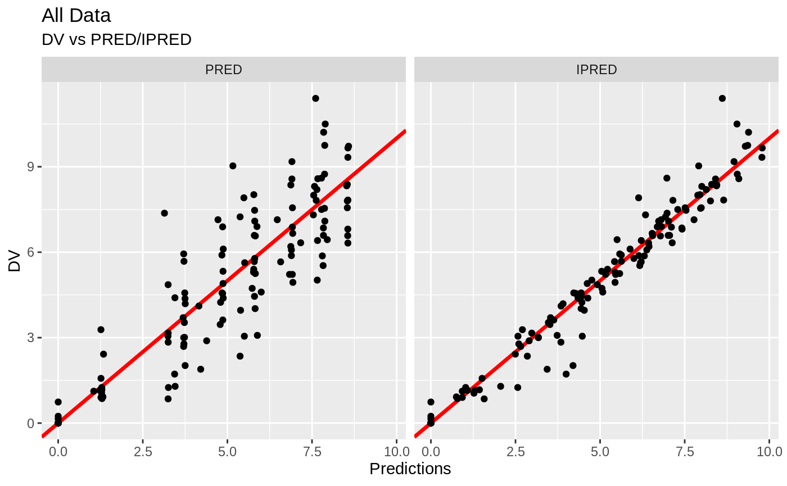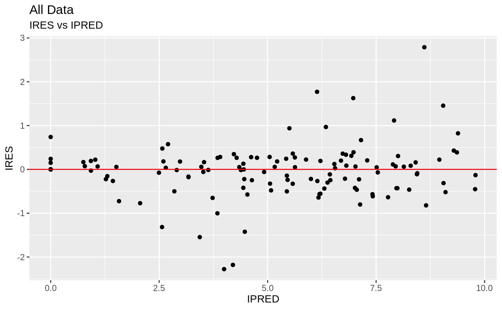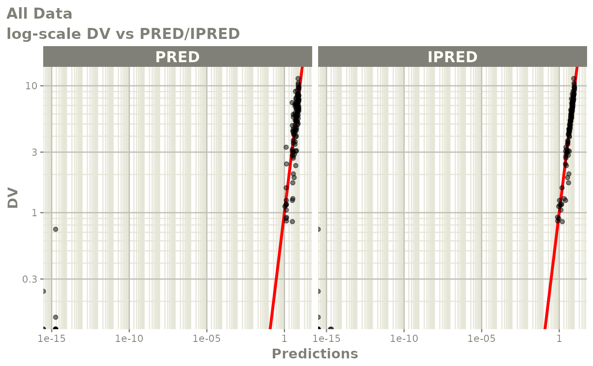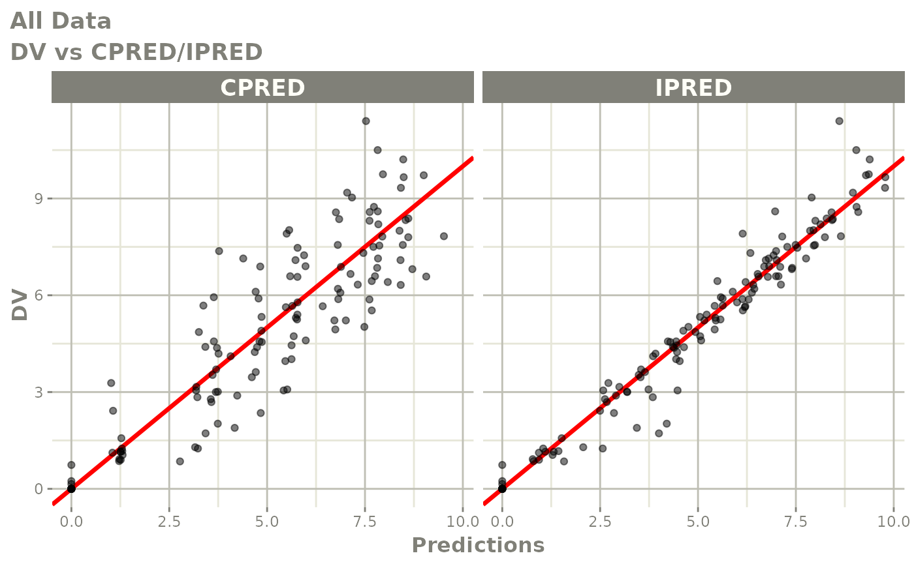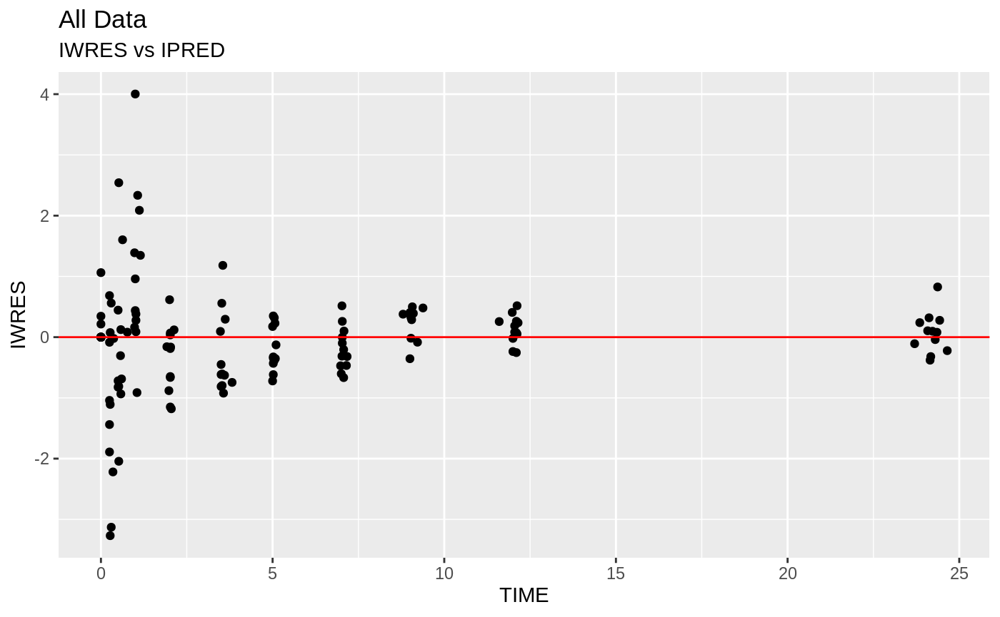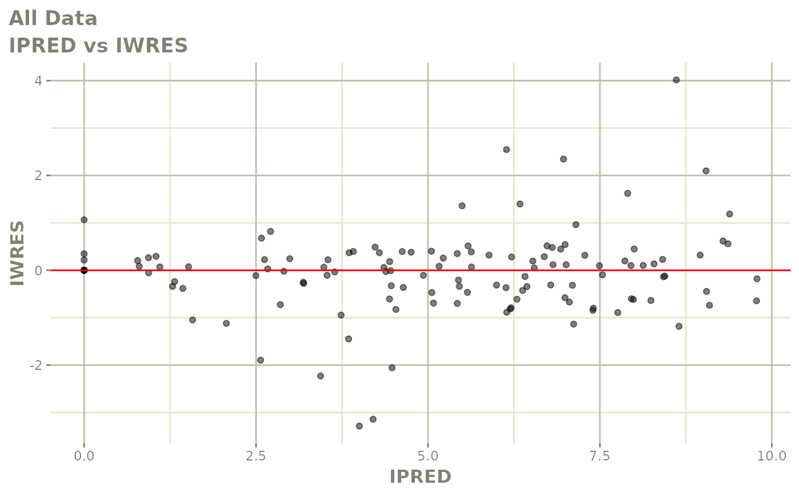
print(fit)
#> ── nlmixr nlme by maximum likelihood (Solved; μ-ref & covs) nlme OBF fit ──
#> OBJF AIC BIC Log-likelihood Condition Number
#> nlme 116.8727 373.4725 393.6521 -179.7363 17.08747
#>
#> ── Time (sec; $time): ─────────────────────────────────────────────────────
#> nlme setup table other
#> elapsed 2.891 0.894752 0.092 0.631248
#>
#> ── Population Parameters ($parFixed or $parFixedDf): ──────────────────────
#> Parameter Est. SE %RSE Back-transformed(95%CI) BSV(CV%)
#> tka Log Ka 0.447 0.192 43 1.56 (1.07, 2.28) 68.7
#> tcl Log Cl 1.02 0.0847 8.31 2.77 (2.35, 3.27) 26.9
#> tv log V 3.45 0.0464 1.35 31.5 (28.7, 34.5) 13.6
#> add.sd 0.697 0.697
#> Shrink(SD)%
#> tka 0.241%
#> tcl 3.78%
#> tv 10.0%
#> add.sd
#>
#> Covariance Type ($covMethod): nlme
#> No correlations in between subject variability (BSV) matrix
#> Full BSV covariance ($omega) or correlation ($omegaR; diagonals=SDs)
#> Distribution stats (mean/skewness/kurtosis/p-value) available in $shrink
#>
#> ── Fit Data (object is a modified tibble): ────────────────────────────────
#> # A tibble: 132 x 19
#> ID TIME DV EVID PRED RES IPRED IRES IWRES eta.ka eta.cl
#> <fct> <dbl> <dbl> <int> <dbl> <dbl> <dbl> <dbl> <dbl> <dbl> <dbl>
#> 1 1 0 0.74 0 0 0.74 0 0.74 1.06 0.101 -0.479
#> 2 1 0.25 2.84 0 3.25 -0.410 3.84 -1.00 -1.44 0.101 -0.479
#> 3 1 0.570 6.57 0 5.83 0.744 6.78 -0.212 -0.305 0.101 -0.479
#> # … with 129 more rows, and 8 more variables: eta.v <dbl>,
#> # nlmixr_lincmt_ka <dbl>, nlmixr_lincmt_cl <dbl>, nlmixr_lincmt_v <dbl>,
#> # ka <dbl>, cl <dbl>, v <dbl>, nlmixr_lincmt_pred <dbl>fit$eta
#> ID eta.ka eta.cl eta.v
#> 1 1 0.10125411 -0.47930868 -0.081852186
#> 2 2 0.20979608 0.14067271 0.012475468
#> 3 3 0.38072310 0.02515996 0.059879875
#> 4 4 -0.26866368 -0.02186682 -0.005391034
#> 5 5 -0.02689177 -0.15555898 -0.133845932
#> 6 6 -0.38356041 0.37411266 0.194069011
#> 7 7 -0.76270659 0.14482061 0.059472965
#> 8 8 -0.15935914 0.16322112 0.098490368
#> 9 9 1.36745170 0.04197834 0.007747315
#> 10 10 -0.71524442 -0.38786849 -0.161590110
#> 11 11 0.75922876 0.28605595 0.141871688
#> 12 12 -0.50202774 -0.13141837 -0.191327427Default trace plots can be generated using:
traceplot(fit)but with a little more work, we can get a nicer set of iteration trace plots (“wriggly worms”)…
iter <- fit2$par.hist.stacked
iter$Parameter[iter$par=="add.sd"] <- "Additive error"
iter$Parameter[iter$par=="eta.cl"] <- "IIV CL/F"
iter$Parameter[iter$par=="eta.v"] <- "IIV V/F"
iter$Parameter[iter$par=="eta.ka"] <- "IIV ka"
iter$Parameter[iter$par=="tcl"] <- "log(CL/F)"
iter$Parameter[iter$par=="tv"] <- "log(V/F)"
iter$Parameter[iter$par=="tka"] <- "log(ka)"
iter$Parameter <- ordered(iter$Parameter, c("log(CL/F)", "log(V/F)", "log(ka)",
"IIV CL/F", "IIV V/F", "IIV ka",
"Additive error"))
ggplot(iter, aes(iter, val)) +
geom_line(col="red") +
scale_x_continuous("Iteration") +
scale_y_continuous("Value") +
facet_wrap(~ Parameter, scales="free_y") +
labs(title="Theophylline single-dose", subtitle="Parameter estimation iterations")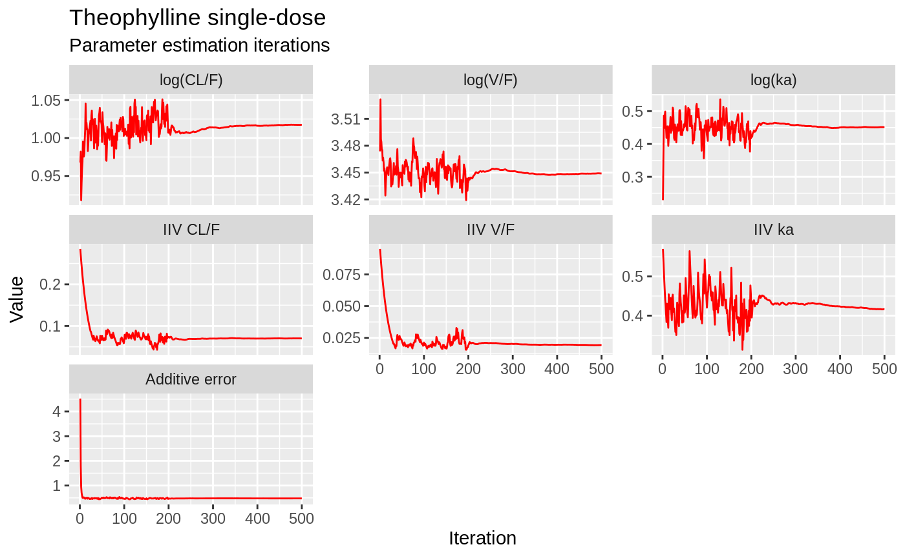
… and some random-effects histograms…
etas <- data.frame(eta = c(fit2$eta$eta.ka, fit2$eta$eta.cl, fit2$eta$eta.v),
lab = rep(c("eta(ka)", "eta(CL/F)", "eta(V/F)"), each=nrow(fit2$eta)))
etas$lab <- ordered(etas$lab, c("eta(CL/F)","eta(V/F)","eta(ka)"))
ggplot(etas, aes(eta)) +
geom_histogram(fill="red", col="white") +
geom_vline(xintercept=0) +
scale_x_continuous(expression(paste(eta))) +
scale_y_continuous("Count") +
facet_grid(~ lab) +
coord_cartesian(xlim=c(-1.75,1.75)) +
labs(title="Theophylline single-dose", subtitle="IIV distributions")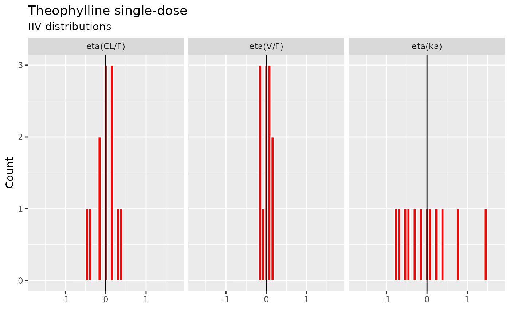
xpose
This is all very nice. But what we really want is a complete suite of model diagnostic tools, like those available in xpose, right?
Restart R, and install xpose from CRAN, if you haven’t already…
## install.packages("xpose")
library(xpose)Now install the extension for nlmixr:
devtools::install_github("nlmixrdevelopment/xpose.nlmixr")… and convert your nlmixr fit object into an xpose fit object.
library(xpose.nlmixr)
xp <- xpose_data_nlmixr(fit2);
#> [====|====|====|====|====|====|====|====|====|====] 0:00:00
#>
#> [====|====|====|====|====|====|====|====|====|====] 0:00:00
#>
#> [====|====|====|====|====|====|====|====|====|====] 0:00:00
#>
#> [====|====|====|====|====|====|====|====|====|====] 0:00:00
#>
#> [====|====|====|====|====|====|====|====|====|====] 0:00:00
#>
#> [====|====|====|====|====|====|====|====|====|====] 0:00:00
#>
#> [====|====|====|====|====|====|====|====|====|====] 0:00:00
#>
#> [====|====|====|====|====|====|====|====|====|====] 0:00:00dv_vs_pred(xp)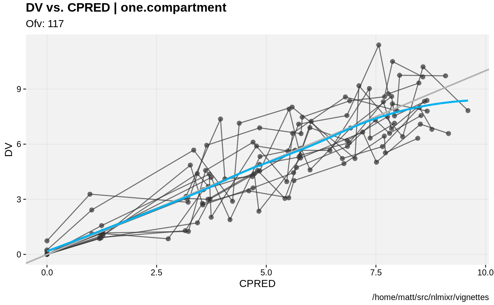
dv_vs_ipred(xp)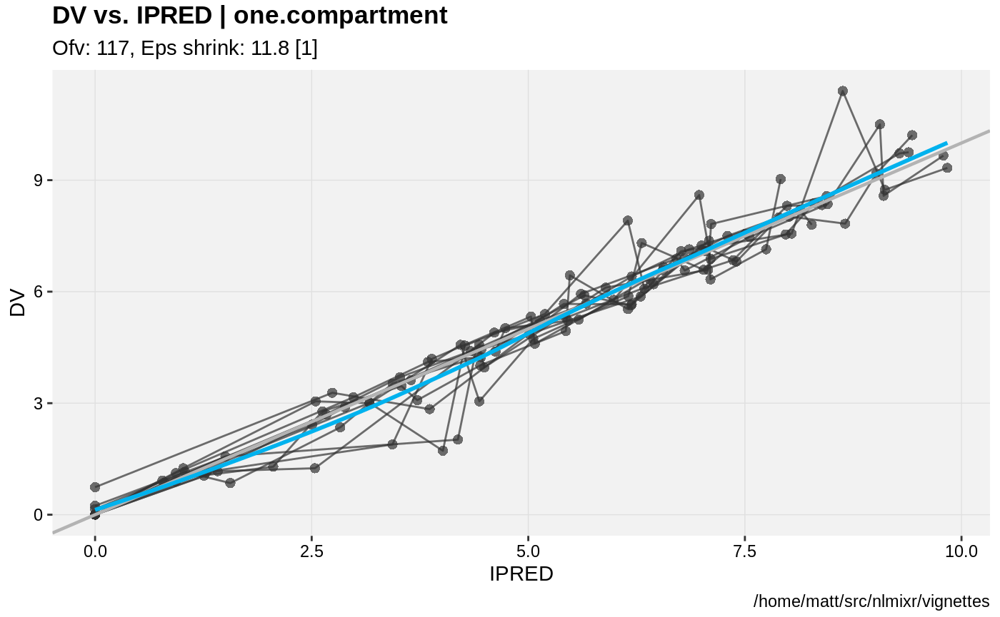
dv_vs_pred(xp)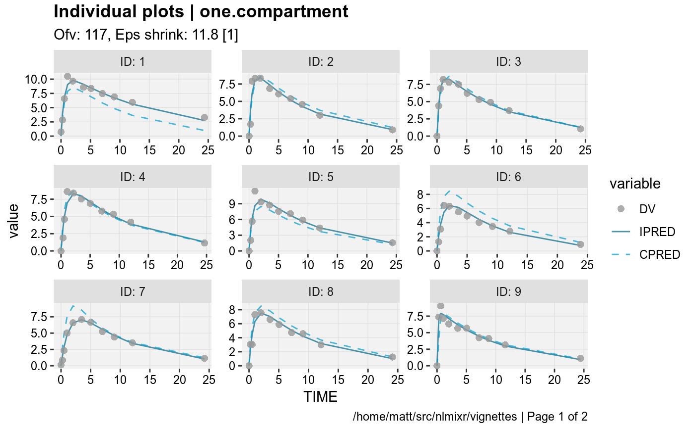
absval_res_vs_pred(xp, res="IWRES")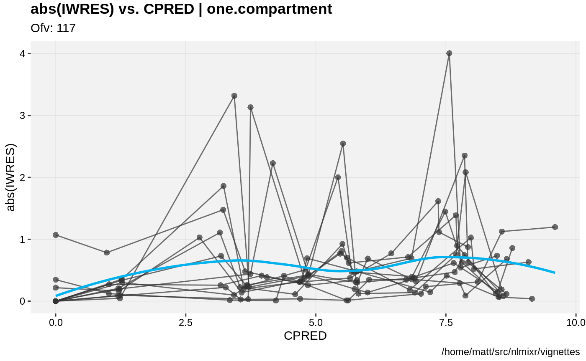 We can also replicate some of nlmixr’s internal plots…
ind_plots(xp, res="IWRES")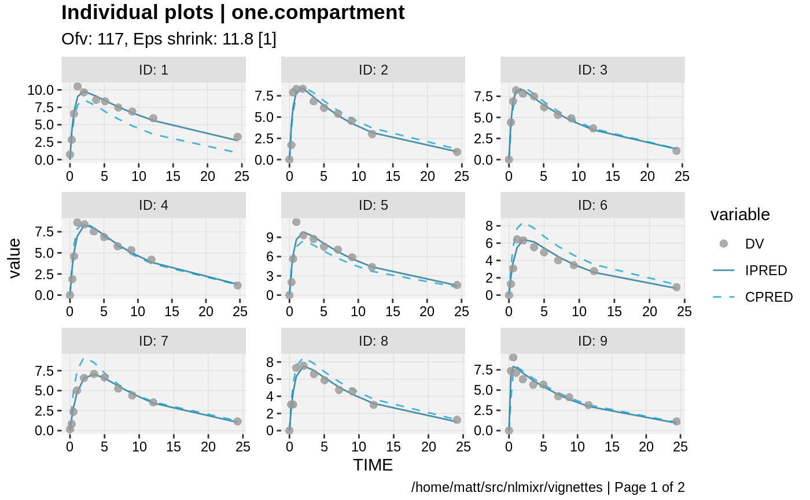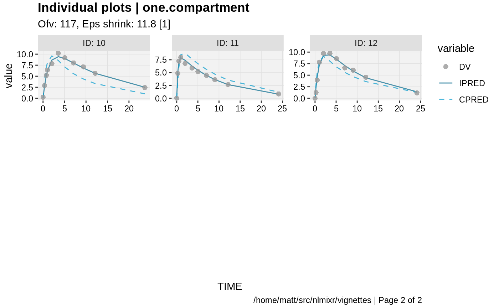
For more information about using xpose, see the Uppsala pharmacometrics group’s comprehensive site here.
The UI
The nlmixr modeling dialect, inspired by R and NONMEM, can be used to fit models using all current and future estimation alogorithms within nlmixr. Using these widely-used tools as inspiration has the advantage of delivering a model specification syntax that is instantly familira to the majority of analysts working in pharmacometrics and related fields.
Overall model structure
Model specifications for nlmixr are written using functions containing ini and model blocks. These functions can be called anything, but must contain these two components. Let’s look at a very simple one-compartment model with no covariates.
f <- function() {
ini({ # Initial conditions/variables
# are specified here
})
model({ # The model is specified
# here
})
}The ini block
The ini block specifies initial conditions, including initial estimates and boundaries for those algorithms which support them (currently, the built-in nlme and saem methods do not). Nomenclature is similar to that used in NONMEM, Monolix and other similar packages. In the NONMEM world, the ini block is analogous to $THETA, $OMEGA and $SIGMA blocks.
f <- function(){ # Note that arguments to the function are currently
# ignored by nlmixr
ini({
# Initial conditions for population parameters (sometimes
# called THETA parameters) are defined by either '<-' or '='
lCl <- 1.6 # log Cl (L/hr)
# Note that simple expressions that evaluate to a number are
# OK for defining initial conditions (like in R)
lVc = log(90) # log V (L)
## Also, note that a comment on a parameter is captured as a parameter label
lKa <- 1 # log Ka (1/hr)
# Bounds may be specified by c(lower, est, upper), like NONMEM:
# Residuals errors are assumed to be population parameters
prop.err <- c(0, 0.2, 1)
# IIV terms will be discussed in the next example
})
# The model block will be discussed later
model({})
}As shown in the above example:
- Simple parameter values are specified using an R-compatible assignment
- Boundaries my be specified by
c(lower, est, upper). - Like NONMEM,
c(lower,est)is equivalent toc(lower,est,Inf) - Also like NONMEM,
c(est)does not specify a lower bound, and is equivalent to specifying the parameter without using R’sc()function.
These parameters can be named using almost any R-compatible name. Please note that:
- Residual error estimates should be coded as population estimates (i.e. using
=or<-, not~). - Variable names that start with
_are not supported. Note that R does not allow variable starting with_to be assigned without quoting them. - Naming variables that start with
rx_ornlmixr_is not allowed, since RxODE and nlmixr use these prefixes internally for certain estimation routines and for calculating residuals. - Variable names are case-sensitive, just like they are in R.
CLis not the same asCl.
In mixture models, multivariate normal individual deviations from the normal population and parameters are estimated (in NONMEM these are called “ETA” parameters). Additionally, the variance/covariance matrix of these deviations are is also estimated (in NONMEM this is the “OMEGA” matrix). These also take initial estimates. In nlmixr, these are specified by the ~ operator. This that is typically used in statistics R for “modeled by”, and was chosen to distinguish these estimates from the population and residual error parameters.
Continuing from the prior example, we can annotate the estimates for the between-subject error distribution…
f <- function(){
ini({
lCl <- 1.6 # log Cl (L/hr)
lVc = log(90) # log V (L)
lKa <- 1 # log Ka (1/hr)
prop.err <- c(0, 0.2, 1)
# Initial estimate for ka IIV variance
# Labels work for single parameters
eta.ka ~ 0.1 ## BSV Ka
# For correlated parameters, you specify the names of each
# correlated parameter separated by a addition operator `+`
# and the left handed side specifies the lower triangular
# matrix initial of the covariance matrix.
eta.cl + eta.vc ~ c(0.1,
0.005, 0.1)
# Note that labels do not currently work for correlated
# parameters. Also, do not put comments inside the lower
# triangular matrix as this will currently break the model.
})
# The model block will be discussed later
model({})
}As shown in the above example:
- Simple variances are specified by the variable name and the estimate separated by
~. - Correlated parameters are specified by the sum of the variable labels and then the lower triangular matrix of the covariance is specified on the left handed side of the equation. This is also separated by
~. - The initial estimates are specified on the variance scale, and in analogy with NONMEM, the square roots of the diagonal elements correspond to coefficients of variation when used in the exponential IIV implementation.
Currently, comments inside the lower triangular matrix are not allowed.
The model block
The model block specifies the model, and is analogous to the $PK, $PRED and $ERROR blocks in NONMEM.
Once the initialization block has been defined, you can define a model in terms of the variables defined in the ini block. You can also mix RxODE blocks into the model if needed.
The current method of defining a nlmixr model is to specify the parameters, and then any required RxODE lines. Continuing the annotated example:
f <- function(){
ini({
lCl <- 1.6 # log Cl (L/hr)
lVc <- log(90) # log Vc (L)
lKA <- 0.1 # log Ka (1/hr)
prop.err <- c(0, 0.2, 1)
eta.Cl ~ 0.1 # BSV Cl
eta.Vc ~ 0.1 # BSV Vc
eta.KA ~ 0.1 # BSV Ka
})
model({
# Parameters are defined in terms of the previously-defined
# parameter names:
Cl <- exp(lCl + eta.Cl)
Vc = exp(lVc + eta.Vc)
KA <- exp(lKA + eta.KA)
# Next, the differential equations are defined:
kel <- Cl / Vc;
d/dt(depot) = -KA*depot;
d/dt(centr) = KA*depot-kel*centr;
# And the concentration is then calculated
cp = centr / Vc;
# Finally, we specify that the plasma concentration follows
# a proportional error distribution (estimated by the parameter
# prop.err)
cp ~ prop(prop.err)
})
}A few points to note:
- Parameters are defined before the differential equations. Currently directly defining the differential equations in terms of the population parameters is not supported.
- The differential equations, parameters and error terms are in a single block, instead of multiple sections.
- Additionally state names, calculated variables, also cannot start with either
rx_ornlmixr_since these are used internally in some estimation routines. - Errors are specified using the tilde,
~. Currently you can use eitheradd(parameter)for additive error,prop(parameter)for proportional error oradd(parameter1) + prop(parameter2)for combined additive and proportional error. You can also specifynorm(parameter)for additive error, since it follows a normal distribution. - Some routines, like
saem, require parameters expressed in terms ofPop.Parameter + Individual.Deviation.Parameter + Covariate*Covariate.Parameter. The order of these parameters does not matter. This is similar to NONMEM’s mu-referencing, though not as restrictive. This means that forsaem, a parameterization of the formCl <- Cl*exp(eta.Cl)is not allowed. - The type of parameter in the model is determined by the
iniblock; covariates used in the model are not included in theiniblock. These variables need to be present in the modeling dataset for the model to run.
Running models
Models can be fitted several ways, including via the [magrittr] forward-pipe operator.
fit <- nlmixr(one.compartment) %>% saem.fit(data=theo_sd)fit2 <- nlmixr(one.compartment, data=theo_sd, est="saem")fit3 <- one.compartment %>% saem.fit(data=theo_sd)Options to the estimation routines can be specified using nlmeControl for nlme estimation:
fit4 <- nlmixr(one.compartment, theo_sd,est="nlme",control = nlmeControl(pnlsTol = .5))where options are specified in the nlme documentation. Options for saem can be specified using saemControl:
fit5 <- nlmixr(one.compartment,theo_sd,est="saem",control=saemControl(n.burn=250,n.em=350,print=50))this example specifies 250 burn-in iterations, 350 em iterations and a print progress every 50 runs.
Model Syntax for solved PK systems
Solved PK systems are also currently supported by nlmixr with the ‘linCmt()’ pseudo-function. An annotated example of a solved system is below:
f <- function(){
ini({
lCl <- 1.6 #log Cl (L/hr)
lVc <- log(90) #log Vc (L)
lKA <- 0.1 #log Ka (1/hr)
prop.err <- c(0, 0.2, 1)
eta.Cl ~ 0.1 # BSV Cl
eta.Vc ~ 0.1 # BSV Vc
eta.KA ~ 0.1 # BSV Ka
})
model({
Cl <- exp(lCl + eta.Cl)
Vc = exp(lVc + eta.Vc)
KA <- exp(lKA + eta.KA)
## Instead of specifying the ODEs, you can use
## the linCmt() function to use the solved system.
##
## This function determines the type of PK solved system
## to use by the parameters that are defined. In this case
## it knows that this is a one-compartment model with first-order
## absorption.
linCmt() ~ prop(prop.err)
})
}A few things to keep in mind: * Currently the solved systems support either oral dosing, IV dosing or IV infusion dosing and does not allow mixing the dosing types. * While RxODE allows mixing of solved systems and ODEs, this has not been implemented in nlmixr yet. * The solved systems implemented are the one, two and three compartment models with or without first-order absorption. Each of the models support a lag time with a tlag parameter. * In general the linear compartment model figures out the model by the parameter names. nlmixr currently knows about numbered volumes, Vc/Vp, Clearances in terms of both Cl and Q/CLD. Additionally nlmixr knows about elimination micro-constants (ie K12). Mixing of these parameters for these models is currently not supported.
Checking model syntax
After specifying the model syntax you can check that nlmixr is interpreting it correctly by using the nlmixr function on it. Using the above function we can get:
nlmixr(f)
#> ▂▂ RxODE-based 1-compartment model with first-order absorption ▂▂▂▂▂▂▂▂▂▂▂▂
#> ── Initialization: ────────────────────────────────────────────────────────
#> Fixed Effects ($theta):
#> lCl lVc lKA
#> 1.60000 4.49981 0.10000
#>
#> Omega ($omega):
#> eta.Cl eta.Vc eta.KA
#> eta.Cl 0.1 0.0 0.0
#> eta.Vc 0.0 0.1 0.0
#> eta.KA 0.0 0.0 0.1
#> ── μ-referencing ($muRefTable): ───────────────────────────────────────────
#> ┌─────────┬─────────┐
#> │ theta │ eta │
#> ├─────────┼─────────┤
#> │ lCl │ eta.Cl │
#> ├─────────┼─────────┤
#> │ lVc │ eta.Vc │
#> ├─────────┼─────────┤
#> │ lKA │ eta.KA │
#> └─────────┴─────────┘
#> ── Model: ─────────────────────────────────────────────────────────────────
#> Cl <- exp(lCl + eta.Cl)
#> Vc = exp(lVc + eta.Vc)
#> KA <- exp(lKA + eta.KA)
#> ## Instead of specifying the ODEs, you can use
#> ## the linCmt() function to use the solved system.
#> ##
#> ## This function determines the type of PK solved system
#> ## to use by the parameters that are defined. In this case
#> ## it knows that this is a one-compartment model with first-order
#> ## absorption.
#> linCmt() ~ prop(prop.err)
#> ▂▂▂▂▂▂▂▂▂▂▂▂▂▂▂▂▂▂▂▂▂▂▂▂▂▂▂▂▂▂▂▂▂▂▂▂▂▂▂▂▂▂▂▂▂▂▂▂▂▂▂▂▂▂▂▂▂▂▂▂▂▂▂▂▂▂▂▂▂▂▂▂▂▂▂In general this gives you information about the model (what type of solved system/RxODE), initial estimates as well as the code for the model block.